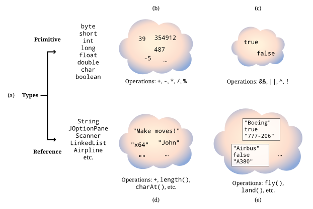
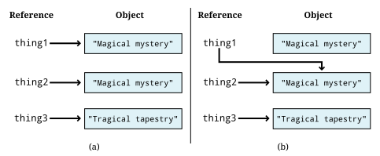
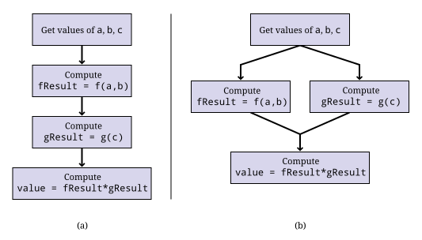

Capítulo 3. Tipos primitivos e Strings
A originalidade existe em cada indivíduo porque cada um de nós difere dos demais. Somos todos números primos, divisíveis apenas por nós mesmos.
3.1. Problema: Calculadora de custos da faculdade
Talvez você seja um estudante. Talvez não seja. Em ambos os casos, você deve estar ciente do custo cada vez mais alto de uma educação universitária. O problema motivador deste capítulo é criar um programa em Java capaz de estimar esse custo, incluindo hospedagem e alimentação. Ele começa lendo um nome, um sobrenome, o custo por semestre da mensalidade, o custo mensal do aluguel e o custo mensal da alimentação como entrada de um usuário. Muitos estudantes fazem empréstimos para pagar a faculdade. Na verdade, a dívida estudantil ultrapassou a dívida de cartão de crédito nos Estados Unidos. Podemos implementar um recurso para ler uma taxa de juros e o número de anos previstos para quitar o empréstimo.
Depois de receber todos esses dados como entrada, queremos calcular o custo anual dessa educação, o custo total de quatro anos, o pagamento mensal do empréstimo e o custo total do empréstimo ao longo do tempo. Além disso, queremos exibir essas informações na linha de comando de maneira atraente, personalizadas com o nome do usuário. Abaixo está um exemplo de execução deste programa.
Bem-vindo à Calculadora de Custos da Faculdade! Digite seu nome: Holden Digite seu sobrenome: Caulfield Digite a mensalidade por semestre: $17415 Digite o aluguel por mês: $350 Digite o custo com alimentação por mês: $400 Taxa de juros anual: .0937 Tempo de pagamento do empréstimo: 10 Custos da faculdade para Holden Caulfield *************************************** Custo anual: $43830,00 Custo total de quatro anos: $175320,00 Pagamento mensal do empréstimo: $2256,14 Custo total do empréstimo: $270736,5
Exemplos de uma interface de linha de comando podem ser confusos porque é difícil distinguir o que é saída e o que é entrada. Neste caso, marcamos a entrada com ênfase para que fique claro o que o usuário digita. Neste programa, os nomes, a mensalidade, o aluguel, a alimentação, a taxa de juros e os anos para pagar o empréstimo são inseridos como entrada. Observe que os símbolos de dólar não fazem parte da entrada e são exibidos como uma orientação para o usuário e para dar um acabamento visual.
Esperamos que você já tenha uma boa compreensão deste problema, mas há alguns detalhes matemáticos que vale a pena abordar. Primeiro, o custo anual é o dobro da mensalidade semestral mais 12 vezes os custos de aluguel e alimentação. O custo de quatro anos é simplesmente quatro vezes o custo anual. O valor da prestação mensal do empréstimo , no entanto, requer uma fórmula da matemática financeira. Seja P o valor do empréstimo (o principal). Seja J a taxa de juros mensal (a taxa de juros anual dividida por 12). Seja N o número de meses para pagar o empréstimo (anos do empréstimo multiplicados por 12). Seja M o pagamento mensal que queremos calcular, dado pela seguinte fórmula.

Se você usar os conceitos e a sintaxe do capítulo anterior com cuidado, talvez consiga resolver este problema sem precisar ler mais adiante. No entanto, há uma profundidade nas ideias de tipos e operações que ainda não exploramos totalmente. Fazer um programa funcionar não é suficiente. Os programadores devem compreender cada detalhe e peculiaridade de suas ferramentas para evitar possíveis bugs.
3.2. Conceitos: Tipos
Toda operação dentro de um programa Java manipula dados. Frequentemente, esses dados são armazenados em variáveis, que se parecem com as variáveis da matemática.
Considere a equação matemática x + 3 = 7. Nela, x tem o valor 4, e sempre terá. Você pode criar outra equação na qual x tenha um valor diferente, mas ele não mudará nesta equação. As variáveis Java são diferentes. São locais onde você pode armazenar algo. Se você decidir mais tarde que deseja alterar o que armazenou ali, pode colocar outra coisa no mesmo local, sobrescrevendo o valor antigo.
Em contraste com uma variável está um literal. Um literal é um valor concreto
que não muda, embora possa ser armazenado em uma variável. Números
como 4 ou 2.71828183 são literais. Precisamos representar texto e
caracteres únicos em Java também, e existem literais como
“gomo de laranja” e ‘X’ que desempenham essas funções.
Em Java, tanto variáveis quanto literais têm tipos. Se você pensar em uma
variável como uma caixa onde é possível guardar algo, seu tipo é a forma
dessa caixa. Os tipos de literais que podem ser armazenados nessa caixa devem ter
um formato compatível. No último capítulo, apresentamos o tipo int para
armazenar valores inteiros e o tipo double para armazenar valores de ponto flutuante
. Java é uma linguagem fortemente tipada, o que significa que, se declararmos
uma variável do tipo int, só poderemos colocar valores int nela (com
algumas exceções).
Essa ideia de tipo leva algum tempo para se acostumar. De uma perspectiva matemática
, 3 e 3.0 são idênticos.
No entanto, se você tiver uma variável int em Java, pode armazenar 3 nela
, mas não pode armazenar 3.0. O tipo de um valor nunca muda,
mas você pode converter um valor de um tipo para um valor equivalente em outro tipo.
3.2.1. Tipos como conjuntos e operações
Antes de prosseguirmos, vamos analisar mais a fundo o que realmente é um tipo. Podemos
pensar em um tipo como um conjunto de elementos. Por exemplo, int representa
um conjunto de valores inteiros (especificamente, os inteiros entre
-2.147.483.648 e 2.147.483.647, inclusive). Considere
as seguintes declarações:
int x;
int y;Essas declarações indicam que as variáveis chamadas x e y podem
conter apenas valores inteiros no intervalo int. Além disso, um tipo só
permite operações específicas. Em Java, o tipo int permite adição,
subtração, multiplicação, divisão e várias outras operações sobre as quais
falaremos em Seção 3.3, mas não há nenhuma operação embutida
para elevar um valor int a uma potência em Java. Vamos supor que x
seja do tipo int. Como discutimos no capítulo anterior, a
expressão x + 2 realiza a adição entre a variável representada por
x e o literal 2. Algumas linguagens usam o operador ^ para significar
elevar um número a uma potência. Seguindo essa notação, alguns programadores iniciantes
em Java são tentados a escrever x ^ 2 para calcular x ao quadrado.
O operador ^ tem um significado em Java, mas não eleva
valores a uma potência. Outras combinações de operadores são simplesmente inválidas,
como x # 2.
A ideia de usar tipos dessa maneira dá estrutura a um programa. Todas as
operações são bem definidas. Por exemplo, você sabe que somar dois valores int
resultará em outro valor int. Java é uma linguagem
estaticamente tipada. Isso significa que ela pode analisar todos os tipos que você está
usando em seu programa em tempo de compilação e alertá-lo se você estiver fazendo
algo inválido. Consequentemente, você receberá muitos avisos
e erros do compilador, mas poderá ter mais certeza de que seu programa está correto
se todos os tipos fizerem sentido.
3.2.2. Tipos primitivos e de referência em Java
Conforme mostrado na Figura 3.1(a), existem dois tipos de
tipos em Java: tipos primitivos e tipos de referência. Os tipos primitivos
são como caixas que contêm valores únicos e concretos. Os tipos primitivos em
Java são byte, short, int, long, float, double, boolean,
e char. Esses são tipos fornecidos pelos criadores do Java, e
não é possível criar novos. Cada tipo primitivo possui um conjunto de
operadores que são válidos para ele. Por exemplo, todos os tipos numéricos
podem ser usados com + e -. Falaremos sobre esses tipos e seus
operadores em detalhes em Seção 3.3.

int (b), o tipo primitivo boolean (c), o tipo de referência String (d) e um possível tipo de referência Aircraft (e) são representados como conjuntos de itens com operações.Os tipos de referência funcionam de maneira diferente dos tipos primitivos. Por um lado, uma variável de referência aponta para um objeto. Isso significa que, quando você atribui uma variável de referência a outra, não está obtendo uma cópia totalmente nova do objeto. Em vez disso, você obtém outra seta que aponta para o mesmo objeto. O resultado é que realizar uma operação em uma referência pode efetivamente alterar outra referência, se ambas estiverem apontando para o mesmo objeto.
Outra diferença é que as variáveis de referência (ou simplesmente referências)
não possuem um grande conjunto de operadores que funcionam com elas. Toda variável
pode ser usada com os operadores de atribuição (=) e de comparação (==)
. Toda variável também pode ser concatenada com um String
usando o operador +, mas mesmo que dois objetos representem valores numéricos
, eles não podem ser somados com o operador +.
As referências ainda devem ser consideradas como tipos que definem um conjunto de objetos
e operações que podem ser realizadas com eles. Em vez de usar operadores,
no entanto, as referências usam métodos. Você já viu métodos como
System.out.print() e JOptionPane.showInputDialog() no capítulo anterior
. Um método geralmente tem um ponto (.) antes dele e sempre tem
parênteses depois. Esses parênteses contêm os parâmetros de entrada
ou argumentos que você passa para um método. Usar operadores em tipos primitivos
é conveniente, mas, por outro lado, não há limite para o
número, tipo ou complexidade dos métodos que podem ser usados em referências.
Outra característica importante dos tipos de referência é que qualquer pessoa pode defini-
los. Até agora, você viu os tipos de referência String e
JOptionPane. Como discutiremos mais adiante, String é um tipo de referência incomum
, pois está profundamente integrado à linguagem. Existem
alguns outros tipos como esse (como Object), mas a maioria dos tipos de referência
poderia ter sido escrita por qualquer pessoa, até mesmo por você.
Para criar um novo tipo, você escreve uma classe e define dados e métodos
dentro dela. Se você quisesse definir um tipo para representar aviões, você
poderia criar a classe Airplane e atribuir a ela métodos como
takeOff(), fly() e land(), pois essas são operações que qualquer
avião deve ser capaz de realizar.
Uma vez que uma classe tenha sido definida, é possível instanciar um
objeto. Um objeto é uma instância específica do tipo. Por exemplo, o
tipo pode ser Airplane, mas o objeto pode ser referenciado por uma
variável chamada sr71Blackbird. Presumivelmente, esse objeto tem um peso, uma
velocidade máxima e outras características que o identificam como um Lockheed
SR-71 “Blackbird”, o famoso avião espião. Resumindo: um objeto é uma
instância concreta de dados. Uma referência é uma variável que dá
um nome a (aponta para) um objeto. Um tipo é uma classe que tanto a
variável quanto o objeto possuem, que define que tipos de dados o
objeto contém e quais operações ele pode realizar.
A tabela a seguir lista algumas das diferenças entre tipos primitivos e tipos de referência.
| Tipos primitivos | Tipos de referência |
|---|---|
Criados pelos designers do Java |
Criados por qualquer programador Java |
Usam operadores para realizar operações |
Usam métodos para realizar operações |
Existem apenas oito tipos primitivos diferentes |
O número de tipos de referência é ilimitado e cresce cada vez que alguém cria uma nova classe |
Armazenam um número específico de bytes de dados, dependendo do tipo |
O objeto referenciado pode armazenar quantidades arbitrárias de dados |
A atribuição copia um valor de um lugar para outro |
A atribuição copia uma seta que aponta para um objeto |
A declaração cria uma caixa para armazenar valores |
A declaração cria uma seta que pode apontar para um objeto, mas apenas a instanciação cria um novo objeto |
3.2.3. Segurança de tipos
Por que temos tipos? Existem linguagens de tipagem fraca nas quais é possível armazenar qualquer valor em praticamente qualquer variável. Por que se preocupar com todas essas regras complicadas? A maioria das linguagens de montagem não possui noção de tipos e permite que o programador manipule a memória diretamente.
Como Java é fortemente tipado, o tipo de cada variável, seja primitiva ou de referência, deve ser declarado antes de seu uso. Essa restrição permite que o compilador Java realize muitas verificações de segurança e validade durante a compilação, e a JVM realiza mais algumas durante a execução. Essas verificações evitam erros durante a execução do programa que, de outra forma, seriam difíceis de detectar — erros que poderiam levar a falhas catastróficas do programa.
O foguete Ariane 5 é um exemplo de falha catastrófica causada por um erro de tipo. Em seu primeiro voo, o foguete saiu de sua trajetória e acabou explodindo. A falha foi causada por erros decorrentes da conversão de um valor real de 64 bits em um valor inteiro de 16 bits. O valor convertido era maior do que o inteiro poderia armazenar, resultando em um valor sem sentido.
A conversão de um tipo para outro é chamada de casting. A falha do Ariane 5 foi proveniente a um problema com o casting que não foi detectado. Mesmo em Java, é possível que um ser humano contorne a segurança de tipos com um casting irresponsável.
3.3. Sintaxe: Tipos em Java
Nesta seção, aprofundamos o sistema de tipos em Java,
começando pelas variáveis e passando para as propriedades dos oito
tipos primitivos e as propriedades de String e outros tipos de referência
.
3.3.1. Variáveis e literais
Para usar uma variável em Java, você deve primeiro declará-la, o que reserva
memória para armazenar a variável e atribui um nome a esse espaço.
As declarações sempre seguem o mesmo padrão. O tipo é escrito primeiro
seguido pelo identificador, ou nome, da variável. Abaixo, declaramos
uma variável chamada value do tipo int.
int value;Observe como usamos o mesmo padrão para declarar uma variável de referência chamada
creature do tipo Wombat.
Wombat creature;Você pode declarar uma variável e terminar a linha com um
ponto-e-vírgula (;), mas é comum inicializar uma variável ao mesmo
tempo. A linha a seguir declara value e a inicializa
simultaneamente como 5.
int value = 5;Não se esqueça de que você está tanto declarando quanto inicializando em uma linha como a acima. Programadores iniciantes em Java às vezes tentam declarar uma variável mais de uma vez, como no exemplo a seguir:
int value = 5;
int value = 10;O Java não permite que duas variáveis com o mesmo nome existam no
mesmo bloco de código. O programador provavelmente pretendia o seguinte,
reutilizar a variável value e substituir seu conteúdo por 10.
int value = 5;
value = 10;Esse erro é mais comum quando várias outras linhas de código se encontram entre as duas atribuições.
Em alguns dos exemplos acima, armazenamos o valor 5 em nossa
variável value. O símbolo 5 é um exemplo de um literal. Um literal
é um valor representado diretamente no código. Ele não pode ser alterado, mas
pode ser armazenado em variáveis que tenham um tipo compatível. Os valores armazenados
em variáveis provêm de literais, entradas ou expressões mais complexas
. Assim como as variáveis, os literais têm tipos. O tipo de 5
é int, enquanto o tipo de 5.0 é double. Outros tipos têm literais
escritos de maneiras que discutiremos a seguir.
3.3.2. Tipos primitivos
Os blocos de construção de todos os programas Java são os tipos primitivos. Todos os objetos devem, fundamentalmente, conter tipos primitivos em sua essência. Existem oito tipos primitivos. Metade deles é usada para representar valores inteiros, e começaremos analisando esses.
Inteiros: byte, short, int e long
Uma variável destinada a conter valores inteiros pode ser declarada com qualquer um dos
quatro tipos byte, short, int, ou long. Todos eles são assinados
(armazenando números positivos e negativos) e representam números no
complemento de dois. Eles diferem apenas pelo intervalo de valores que cada tipo pode
armazenar. Esses intervalos e o número de bytes usados para representar variáveis
de cada tipo são apresentados abaixo.
| Tipo | Bytes | Intervalo | ||
|---|---|---|---|---|
byte |
1 |
-128 |
a |
127 |
short |
2 |
-32.768 |
a |
32.767 |
int |
4 |
-2.147.483.648 |
até |
2.147.483.647 |
long |
8 |
-9.223.372.036.854.775.808 |
até |
9.223.372.036.854.775.807 |
Observe que todo o intervalo de byte está incluído no de short, o de short
no de int e assim por diante. Dizemos que short é mais amplo que
byte, int é mais amplo que short e long é mais amplo que int.
Uma variável declarada com o tipo byte só pode representar 256 valores diferentes
, os inteiros no intervalo de -128 a 127. Por que usar byte,
então? Como um valor byte ocupa apenas um único byte, ele pode economizar
memória, especialmente se você tiver uma lista de variáveis chamada array,
que discutiremos em Capítulo 6. No entanto, um intervalo muito restrito
resultará em underflow e overflow. Recomenda-se aos programadores Java
que utilizem int para uso geral. Se você precisar representar
valores maiores que 2 bilhões ou menores que -2 bilhões, use long.
Quando você for um programador experiente, poderá ocasionalmente usar byte
e short para economizar espaço, mas eles devem ser usados com moderação e para um
objetivo claro.
Considere as seguintes declarações.
byte age;
int numberOfRooms;
long foreverCounter = 0;A primeira dessas instruções declara age como uma variável do tipo
byte. Essa declaração significa que age pode assumir qualquer valor dentro do
intervalo de byte. Para um ser humano, essa limitação é razoável (mas
perigosamente próxima do limite), já que não há nenhum caso documentado de uma
pessoa que tenha vivido mais de 122 anos. Da mesma forma, a próxima declaração
declara numberOfRooms como sendo do tipo int. A última declaração
declara foreverCounter como sendo do tipo long e a inicializa como
0.
Como age é uma variável, seu valor pode mudar durante a
execução do programa. Observe que a declaração acima de age não atribui um
valor a ela. Quando declaradas, todas as variáveis inteiras são definidas como
0 pelo Java. No entanto, para garantir que o programador seja explícito sobre
o que deseja, o compilador emitirá um erro na maioria dos casos se uma
variável for usada sem que seu valor tenha sido definido primeiro.
Como qualquer outra variável inteira, podemos atribuir um valor a age da seguinte maneira.
age = 32;Isso atribui o valor 32 à variável age. Observe que o compilador Java
não reclamaria se você atribuísse -10 à variável
age, mesmo que seja impossível para um ser humano ter uma idade negativa
(pelo menos, sem uma máquina do tempo). O Java não atribui nenhum significado ao nome
que você dá a uma variável.
Anteriormente, dissemos que as variáveis precisavam corresponder ao tipo dos literais que você
deseja armazenar nelas. No exemplo acima, declaramos age com
o tipo byte e, em seguida, armazenamos 32 nela. Qual é o tipo de 32? É
byte, short, int ou long? Por padrão, todos os literais inteiros
têm o tipo int, mas podem ser usados com variáveis byte ou short
desde que se encaixem no intervalo. Assim, a linha a seguir causa
um erro.
byte fingers = 128;Se você quiser especificar que um literal tenha o tipo long, pode acrescentar l
ou L a ele. Assim, 42 é um literal int, mas 42L é um literal long
. Você deve sempre usar o L maiúsculo, pois o l pode ser difícil de
distinguir do 1.
No momento da redação deste artigo, o Java 11 é a
versão mais recente do Java, mas
o Java 8 é o mais comumente usado. No Java 7 e versões superiores, é permitido
colocar qualquer número de sublinhados (_) dentro de literais numéricos para
separá-los, a fim de facilitar a legibilidade. Assim, 123_45_6789 pode
representar um número de previdência social, ou você pode usar sublinhados em vez
de vírgulas para escrever três milhões como 3_000_000. Como a maioria dos compiladores suporta
Java 7 ou superior atualmente, é razoável usar essa notação com sublinhados em seus
literais. Observe que você nunca deve usar uma vírgula em um literal numérico Java,
independentemente da versão do Java que estiver usando.
Números de ponto flutuante: float e double
Para representar números com partes fracionárias, o Java oferece dois tipos de ponto flutuante
, double e float. Devido aos limites de precisão de ponto flutuante
discutidos em Capítulo 1, o Java não pode
representar todos os números reais ou racionais, mas esses tipos fornecem boas
aproximações. Se você tiver uma variável que assume valores de ponto flutuante
como 3. 14, 1,707 × 1025,
9,8 ou similares, ela deve ser declarada como double ou
float.
Considere as seguintes declarações.
float roomArea;
double avogadro = 6,02214179E 23A primeira das duas instruções acima declara roomArea como sendo do tipo
float. Observe que a declaração não inicializa roomArea com nenhum
valor. Assim como os tipos primitivos inteiros, uma variável de ponto flutuante não inicializada
contém 0.0, mas o Java geralmente obriga o programador a
atribuir um valor a uma variável antes de usá-la. A segunda das
duas instruções acima declara avogadro como uma variável do tipo double e
a inicializa com a conhecida constante de Avogadro
6.02214179 × 1023. Observe o uso de E para significar
“dez elevado a.” Em Java, você poderia escrever
0,33 × 10-12 como 0,33E-12, ou o número
-4,325 × 1018 como -4,325E18 (ou mesmo -4,325E+18
se você quiser escrever o sinal do expoente explicitamente).
Precisão na representação numérica
Conforme discutido em Capítulo 1, os tipos inteiros
dentro de seus intervalos especificados têm representações exatas. Por
exemplo, se você atribuir 19 a uma variável do tipo int e, em seguida, imprimir
esse valor, você sempre obterá exatamente 19. Os números de ponto flutuante não
têm essa garantia de representação exata.
Tente executar as seguintes instruções em um programa Java.
double test = 0.0;
test += 0.1;
System.out.println(test);
test += 0.1;
System.out.println(test);
test += 0.1;
System.out.println(test);Como estamos somando 0,1 a cada vez, seria de se esperar ver saídas de
0,1, 0,2 e 0,3. Os dois primeiros números são impressos conforme o esperado, mas
o terceiro número é impresso como 0,30000000000000004. Pode parecer
contraintuitivo, mas 0,1 é um decimal periódico em binário, o que significa que
não pode ser representado exatamente usando o padrão de ponto flutuante IEEE de 64 bits
. O método `System.out.println() ` oculta essa imperfeição ao
arredondar a saída além de um certo nível de precisão, mas na terceira
adição, o número se afastou o suficiente de 0,3 para que um
número inesperado apareça.
Variáveis do tipo float oferecem uma precisão de cerca de 6 dígitos decimais
, enquanto as do tipo double oferecem cerca de 15 dígitos decimais. A
precisão da representação de números de ponto flutuante importa? A resposta a
essa pergunta depende da sua aplicação. Em algumas aplicações, uma precisão de 6 dígitos
pode ser adequada. No entanto, ao realizar simulações em grande escala,
como calcular a trajetória de uma espaçonave em uma missão a Marte,
uma precisão de 15 dígitos pode ser uma questão de vida ou morte. Na verdade, mesmo a
precisão do double pode não ser suficiente. Existe uma classe especial BigDecimal
que pode realizar cálculos de precisão arbitrariamente alta, mas devido
à sua baixa velocidade e alta complexidade, ela só deve ser usada nessas
raras situações em que um programador requer um nível de precisão muito maior
do que o que double oferece.
Recomenda-se que programadores Java usem double para computação de uso geral
. O tipo float deve ser usado apenas em casos especiais em que
o armazenamento ou a velocidade são críticos e a precisão não é. Devido à sua
maior precisão, double é considerado um tipo mais abrangente do que float.
Você pode armazenar valores float em um double sem perder precisão, mas
o inverso não é verdadeiro.
Todos os literais de ponto flutuante em Java têm o tipo double, a menos que tenham
um f ou F anexado no final. Assim, 3.14 é um literal double,
mas 3.14f é um literal float.
Saída de ponto flutuante
A formatação da saída para números de ponto flutuante apresenta uma complicação adicional em comparação com a saída de inteiros: quantos dígitos após a vírgula decimal devem ser exibidos? Se você estiver representando valores monetários, é comum mostrar exatamente dois dígitos após a vírgula decimal. Por padrão, todos os dígitos diferentes de zero são exibidos.
Em vez de usar System.out.print(), você pode usar System.out.format()
para controlar a formatação. Ao usar System.out.format(), o primeiro
argumento do método é uma string de formato, um trecho de texto que contém
todo o texto que você deseja exibir, bem como especificadores de formato especiais
que indicam onde outros dados devem aparecer e como devem ser
formatados. Esse método recebe um argumento adicional para cada
especificador de formato usado. O especificador %d é para valores inteiros, o
especificador %f é para valores de ponto flutuante (incluindo os tipos float e
double), e o especificador %s é para texto. Considere o
exemplo a seguir:
System.out.format("%s! Quebrei %d recordes em %f segundos.\n", "Bob", 3, 2.4985);A saída deste código é
Bob! Quebrei 3 recordes em 2,4985 segundos.
Esse tipo de saída é baseado na função printf() usada para saída
na linguagem de programação C. Ela permite que o programador tenha uma
visão holística de como a saída final poderá ficar, mas também
oferece controle sobre a formatação por meio dos especificadores de formato. Por exemplo,
você pode escolher o número de dígitos para um valor de ponto flutuante a ser
exibido após a vírgula decimal, colocando um . e o número entre
o % e o f.
System.out.format(“$%.2f\n”, 123.456789 );A saída deste código é:
$123.46
Observe que o último dígito visível é arredondado em vez de truncado. Observe que %n é um especificador de formato especial que indica uma nova linha. Para saber mais sobre outras maneiras de usar strings de formato para manipular a saída, leia a documentação da Oracle https://docs.oracle.com/en/java/javase/ 21/docs/api/java.base/java/util/Formatter.html#syntax[Documentação do Formatter^].
Aritmética básica
A tabela a seguir lista os operadores aritméticos disponíveis em Java. Todos esses operadores podem ser usados tanto nos tipos primitivos inteiros quanto nos tipos primitivos de ponto flutuante.
| Operador | Significado |
|---|---|
+ |
Soma |
- |
Subtração |
* |
Multiplicação |
/ |
Divisão |
% |
Módulo (restante) |
Os quatro primeiros devem ser familiares. Adição, subtração e multiplicação funcionam como você esperaria, desde que o resultado esteja dentro do intervalo definido para os tipos que você está usando, mas a divisão é um pouco confusa. Se você dividir dois valores inteiros em Java, obterá um inteiro como resultado. Se houvesse uma parte fracionária, ela será truncada, não arredondada. Considere o seguinte.
int x = 1999/1000;Na matemática comum, 1.999 ÷ 1.000 = 1,999. Em Java,
1999/1000 resulta em 1, e é isso que é armazenado em x. Para
números de ponto flutuante, o Java funciona muito mais como a matemática comum.
double y = 1999.0/1000.0;Nesse caso, y contém 1. 999. Os literais 1999.0 e 1000.0
são do tipo double. O tipo de y não afeta a divisão, mas ele
precisava ser double para ser um local válido para armazenar o resultado.
É fácil se concentrar na variável e esquecer os tipos envolvidos na operação. Considere o seguinte.
double z = 1999/1000;Como z tem o tipo double, parece que o resultado da divisão
deveria ser 1.999. No entanto, o dividendo e o divisor têm tipo
int, e o resultado é 1. Esse valor é convertido para double e
armazenado em z como 1.0. Esse erro é mais comum no
cenário a seguir.
double half = 1/2;O código parece correto à primeira vista, mas 1/2 resulta em 0. Se o resultado for
armazenado em uma variável double, é melhor multiplicar por 0.5
em vez de dividir por 2.
Talvez você não tenha pensado nisso desde o ensino fundamental, mas
o operador de divisão (/) calcula o quociente de dois números. O
operador de módulo (%) calcula o restante. Por exemplo, 15 / 6 é
2, enquanto 15 % 6 é 3, porque 6 cabe duas vezes em 15, sobrando 3
. O operador de módulo é geralmente usado com valores inteiros, mas está
também definido para funcionar com valores de ponto flutuante em Java. É fácil
desconsiderar o operador de módulo porque não o usamos com frequência na vida cotidiana
, mas ele é incrivelmente útil em programação. À primeira vista, ele permite
que vejamos o resto após a divisão. Essa ideia pode ser aplicada para verificar
se um número é par ou ímpar. Ele também pode ser usado para comprimir um grande
intervalo de inteiros aleatórios a um intervalo menor ou realizar um tipo de aritmética circular
útil para criptografia. Fique de olho nele.
Vamos usá-lo muitas vezes neste livro.
Precedência
Embora todos os exemplos anteriores usem apenas um operador matemático, você pode combinar vários operadores e operandos em uma expressão maior como a seguinte.
((a + b) * (c + d)) % eEssas expressões são avaliadas da esquerda para a direita, usando a ordem padrão
de operações: Os operadores * e / (e também %) têm
precedência sobre os operadores + e -. Assim como na matemática,
os parênteses têm a maior precedência e podem ser usados para aumentar a clareza.
Assim, a ordem de avaliação de a + b / c é a mesma que
a + (b / c), mas diferente de (a + b) / c.
Considere as seguintes linhas de código.
int a = 31;
int b = 16;
int c = 1;
int d = 2;
a = b + c * d - a / b / d;Qual é o resultado? A primeira operação a ser avaliada é c * d,
resultando em 2. A seguinte é a / b, resultando em 1, que é então dividido
por d, resultando em 0 `. Em seguida, `b + 2 resulta em 18, e 18 - 0 continua sendo
18. Portanto, o valor armazenado em a é 18.
Seu matemático interior pode ficar nervoso porque a é usada na
expressão do lado direito da atribuição e também é a variável
onde o resultado é armazenado, mas essa situação é muito comum na
programação. O valor de a não muda até que toda a matemática
tenha sido feita. A atribuição sempre ocorre por último.
Todos os operadores que discutimos até agora são operadores binários.
Esse uso da palavra “binário” não tem nada a ver com a base 2. Um
operador binário recebe dois operandos e realiza uma operação, como somá-los.
Um operador unário recebe um único operando e realiza uma operação. O operador -
pode ser usado como um operador unário para negar um literal, uma variável
ou uma expressão. Uma negação unária tem precedência maior do que os outros
operadores, assim como na matemática. Em outras palavras , a variável ou
expressão será negada antes de ser multiplicada ou dividida. O operador +
pode ser usado em qualquer lugar onde você usaria uma negação unária, embora
na verdade ele não faça nada. Considere as seguintes instruções.
int a = - 4;
int b = -c + d / -(e * f);
int s = +t + (-r);Atalhos
Algumas operações ocorrem com frequência em Java. Por exemplo, aumentar uma
variável em um determinado valor é uma tarefa comum. Se você quiser aumentar o
conteúdo da variável value em 10, pode escrever o seguinte.
value = value + 10;Embora a instrução acima não seja excessivamente longa, aumentar uma
variável é tão comum que existe uma forma abreviada para isso. Para obter o
mesmo efeito, você pode usar o operador +=.
value += 10;O operador += obtém o conteúdo da variável, neste caso value,
soma o que estiver à sua direita, neste caso 10, e armazena o
resultado de volta na variável. Essencialmente, isso evita que você escreva
o nome da variável duas vezes. E += não é o único atalho. É
apenas um membro de uma família de operadores de atalho que realizam uma operação binária
entre a variável no lado esquerdo e a expressão no
lado direito e, em seguida, armazenam o valor de volta na variável. Existe
um operador -= que diminui uma variável, um * = que multiplica uma
variável, e vários outros, incluindo atalhos para operações bit a bit
que abordaremos na próxima subseção.
| Operador | Exemplo | Significado |
|---|---|---|
+= |
a += b; |
a = a + b; |
-= |
a -= b; |
a = a - b; |
*= |
a *= b; |
a = a * b; |
/= |
a /= b; |
a = a / b; |
%= |
a %= b; |
a = a % b; |
&= |
a &= b; |
a = a & b; |
^= |
a ^= b; |
a = a ^ b; |
|= |
a |= b; |
a = a | b; |
<⇐ |
a <⇐ b; |
a = a << b; |
>>= |
a >>= b; |
a = a >> b; |
>>>= |
a >>>= b; |
a = a >>> b; |
Esses atalhos de atribuição são úteis e podem tornar uma linha mais curta e mais fácil de ler.
Como você pode perder precisão, não é permitido armazenar um valor double
em uma variável int. Portanto, as seguintes linhas de código são
ilegais e não serão compiladas.
int x = 0;
x = x + 0.1;Nesse caso, a verificação faz muito sentido. Se fosse possível somar
0.1 a 0 e, em seguida, armazenar esse valor em uma variável int, a
parte fracionária seria truncada, mantendo 0 na variável.
No entanto, essa proteção contra perda de precisão não é feita com
atalhos de atribuição. Mesmo que esperemos que as linhas a seguir sejam
funcionalmente idênticas às anteriores, elas serão compiladas (mas
ainda assim não farão nada).
int x = 0;
x += 0.1;Esse tipo de erro pode causar problemas quando o programa espera que o valor
de x aumente e, eventualmente, atinja algum nível.
Existem também dois atalhos unários. Incrementar um valor em um e
decrementar um valor em um são operações tão comuns que recebem
seus próprios operadores especiais, ++ e --.
| Operador | Exemplo | Significado |
|---|---|---|
++ |
++a; |
a = a + 1; |
— |
--a; |
a = a - 1; |
Usar um incremento ou um decremento altera o valor de uma variável.
Em todos os outros casos, é necessário usar um operador de atribuição para
alterar uma variável. Mesmo nos atalhos binários apresentados anteriormente, o
programador é lembrado de que uma atribuição está ocorrendo porque o símbolo =
está presente.
Tanto o operador de incremento quanto o de decremento existem nas variantes prefixada e pós-fixada
. Você pode escrever ++ (ou --) na frente da variável
que está alterando ou atrás dela.
int value = 5;
value++; // Agora value é 6
++value; // Agora value é 7
value--; // value é 6 novamenteQuando usada em uma linha sozinha, qualquer uma das formas funciona exatamente da mesma maneira. No entanto, a variável incrementada (ou decrementada) também pode ser usada como parte de uma expressão maior. Em uma expressão maior, a forma prefixada incrementa (ou decrementa) a variável antes de o valor ser usado na expressão. Por outro lado, a forma pós-fixada retorna uma cópia do valor original, efetivamente incrementando (ou decrementando) a variável depois de o valor ser usado na expressão. Considere o seguinte exemplo.
int prefix = 7;
int prefixResult = 5 + ++prefix;
int postfix = 7;
int postfixResult = 5 + postfix++;Após a execução do código, os valores de prefix e postfix são
ambos 8. No entanto, prefixResult é 13, enquanto postfixResult é apenas
12. O valor original de postfix, que é 7, é somado a 5,
e só então a operação de incremento ocorre.
Incrementar uma variável em Java é uma operação muito comum. Expressões
como pass: [i]` e `pass:[i] aparecem com tanta frequência que é fácil esquecer exatamente
o que elas significam. Programadores ocasionalmente esquecem que elas são uma forma abreviada
de i = i + 1 e começam a pensar nelas como uma maneira sofisticada de escrever
i + 1.
Quando confuso, um programador pode escrever algo como o seguinte.
int i = 14;
i = i++;À primeira vista, pode parecer que a segunda linha de código realmente significa
i = i = i + 1. Atribuir i uma vez a mais é inútil, mas parece que
isso não deve causar nenhum dano. Lembre-se de que a versão pós-fixada retorna uma cópia do
valor original antes de ele seja incrementado. Neste caso, i
será incrementado, mas então seu valor original será armazenado de volta
nele mesmo. No código apresentado acima, o valor final de i ainda é
14.
Em geral, não é aconselhável realizar operações de incremento ou decremento no meio de expressões maiores, e desaconselhamos fazê-lo. Em alguns casos, o código pode ser encurtado ocultando-se habilmente um incremento no meio de alguma outra expressão. No entanto, ao reler o código, sempre leva um momento para ter certeza de que o incremento ou decremento está fazendo exatamente o que deveria. A confusão adicional causada por essa astúcia não compensa a linha de código economizada. Além disso, o compilador traduzirá as operações exatamente no mesmo bytecode, o que significa que a versão mais curta não é mais eficiente do que a versão mais longa quando executada.
No entanto, muitos programadores gostam de comprimir seu código até o menor número possível de linhas de código. Você pode ter que ler código que usa incrementos e decrementos de maneiras inteligentes (embora obscuras), mas você deve sempre se esforçar para tornar seu próprio código o mais legível possível. Ao longo deste livro, daremos preferência ao estilo prefixo para incrementos e decrementos, porque é garantido que seja tão rápido ou mais rápido que o pós-fixo e porque corresponde ao que a maioria das pessoas intuitivamente espera, ou seja, que a atualização ocorra primeiro.
Operadores bit a bit
Além dos operadores matemáticos normais, Java fornece um conjunto de
operadores bit a bit correspondentes às operações que discutimos em
Capítulo 1. Esses operadores realizam
operações bit a bit em valores inteiros. Os operadores bit a bit são &, |, ^,
e ~ (que é unário). Além disso, existem operadores de deslocamento
bit a bit: << para deslocamento à esquerda com sinal, >> para deslocamento à direita com sinal e
>>> para deslocamento à direita sem sinal. Não há operador de deslocamento à esquerda sem sinal
em Java.
| Operador | Nome | Descrição |
|---|---|---|
& |
AND bit a bit |
Combina duas representações binárias em uma nova representação que possui um 1 em todas as posições em que ambas as representações originais possuem um 1 |
| |
OR bit a bit |
Combina duas representações binárias em uma nova representação que possui um 1 em todas as posições em que qualquer uma das representações originais possui um 1 |
^ |
XOR bit a bit |
Combina duas representações binárias em uma nova representação que possui um 1 em todas as posições em que as representações originais têm valores diferentes |
~ |
NOT bit a bit |
Pega uma representação e cria uma nova representação na qual todos os bits são invertidos de 0 para 1 e de 1 para 0 |
<< |
Deslocamento à esquerda com sinal |
Desloca todos os bits o número especificado de posições para a esquerda, inserindo zeros nos bits mais à direita |
>> |
Deslocamento à direita com sinal |
Desloca todos os bits o número especificado de posições para a direita, preenchendo a esquerda com cópias do bit de sinal |
>>> |
Deslocamento à direita sem sinal |
Desloca todos os bits o número especificado de posições para a direita, preenchendo com zeros |
Quando usados com byte e short, todos os operadores bit a bit
converterão automaticamente seus operandos em valores int de 32
bits int. É
fundamental lembrar dessa conversão, já que o número de bits usados para
representação é uma parte fundamental dos operadores bit a bit.
O exemplo a seguir mostra esses operadores em uso. Para compreender a saída, você precisa entender como os inteiros são representados no sistema numérico binário, o que é discutido no [Sintaxe: Representação de dados].
O código a seguir mostra uma sequência de operações bit a bit realizadas com
os valores 3 e -7. Para entender os resultados, lembre-se de que, na
representação de complemento de dois de 32 bits, 3 =
0000 0000 0000 0000 0000 0000 0000 0011 e ` -7` =
1111 1111 1111 1111 1111 1111 1111 1001.
int x = 3;
int y = -7;
int z = x & y;
System.out.println(“x & y\t= ” + z);
z = x | y;
System.out.println(“x | y\t= ” + z);
z = x ^ y;
System.out.println(“x ^ y\t= ” + z);
z = x << 2;
System.out.println(“x << 2\t= ” + z);
z = y >> 2;
System.out.println(“y >> 2\t= ” + z);
z = y >>> 2;
System.out.println(“y >>> 2\t= ” + z);A saída deste fragmento de código é:
x & y = 1 x | y = -5 x ^ y = -6 x << 2 = 12 y >> 2 = -2 y >>> 2 = 1073741822
Observe como a sequência de escape \t é usada para inserir um caractere de tabulação na
saída, alinhando os resultados.
Por que usar os operadores bit a bit? Às vezes, você pode ler dados como
valores byte individuais e pode precisar combinar quatro desses
valores em um único valor int. Embora o deslocamento à esquerda com sinal (<<)
e o deslocamento à direita com sinal (>>) são, respectivamente, equivalentes a
multiplicações repetidas por 2 ou divisões repetidas por 2, eles são mais rápidos do que
fazer essas operações repetidamente. Por fim, algumas dessas operações
são usadas para fins de criptografia ou geração de números aleatórios.
Conversão de tipos
Às vezes, você precisa usar tipos diferentes (como inteiros e valores de ponto flutuante
) juntos. Outras vezes, você tem um valor em um tipo, mas
precisa armazená-lo em outro (como ao arredondar um double
para o int mais próximo). Algumas combinações de operadores e tipos são
permitidas, mas outras causam erros de compilação.
A regra geral é que o Java permite uma atribuição de um tipo para outro, desde que não haja perda de precisão. Ou seja, podemos copiar um valor de um tipo para uma variável de outro tipo, desde que a variável de destino tenha um tipo mais amplo que o valor de origem. Os próximos exemplos ilustram como converter entre diferentes tipos numéricos .
Considere as seguintes instruções.
short x = 341;
int y = x;Como o tipo de y é int, que é mais amplo que short, é válido
atribuir o valor em x à variável y. Na
atribuição, um valor com o tipo mais restrito short é convertido para
um valor equivalente com o tipo mais amplo int. A conversão de um
tipo mais restrito para um tipo mais amplo é chamada de upcast ou promoção,
e o Java permite isso sem erros. A maioria das linguagens permite upcasts
sem nenhuma sintaxe especial, pois é sempre seguro passar de um
tipo mais restrito e limitador para um tipo mais amplo e menos restritivo.
Considere estas instruções que declaram as variáveis a, b e c e
calculam um valor para c.
int a = 10;
int b = 2;
byte c;
c = a + b;Se você tentar compilar essas instruções como parte de um programa Java, receberá uma mensagem de erro como a seguinte.
Erro: possível perda de precisão encontrado: int necessário: byte
O compilador gera o erro acima porque a soma de dois valores int
é outro valor int, que poderia ser maior que o valor máximo
que você pode armazenar na variável byte c. Neste exemplo, você sabe
que o valor 12 não ultrapasse o máximo de 127, mas o
compilador Java é inerentemente cauteloso. Ele emite uma reclamação sempre que o tipo da
expressão a ser avaliada é mais amplo do que o tipo da
variável de destino.
Os inteiros são automaticamente convertidos para ponto flutuante quando necessário. Considere a seguinte instrução.
double tolerance = 3;O literal 3 tem tipo int, mas é automaticamente convertido para o
valor de ponto flutuante 3.0 com tipo double. Novamente, double (e também
float) são considerados tipos mais amplos do que qualquer tipo inteiro.
Consequentemente, essa conversão de tipo é um upcast e é totalmente válida.
Upcasts também ocorrem em operações aritméticas. Sempre que você tenta realizar uma operação aritmética com dois tipos numéricos diferentes, o tipo mais restrito é automaticamente convertido para o tipo mais amplo.
double value = 3 + 7.2;Nesta instrução, 3 é automaticamente convertido para sua versão double
3.0 porque 7.2 tem o tipo mais amplo double.
Para realizar um downcast, o programador precisa indicar que
pretende que a conversão ocorra. Um downcast é indicado
colocando-se o tipo do resultado entre parênteses antes da expressão que você deseja
converter. O próximo exemplo ilustra como converter um valor double para
o tipo int.
double para intAs instruções a seguir causam um erro de compilação porque uma expressão
do tipo double não pode ser armazenada em uma variável do tipo int.
double roomArea = 3.5;
int houseArea = roomArea * 4.0;Um downcast pode causar perda de precisão, e é por isso que o Java não o permite.
Como uma conversão para baixo às vezes é necessária, você pode substituir o sistema de tipos do Java
com uma conversão explícita. Para fazer isso, colocamos o tipo de resultado esperado (ou desejado)
entre parênteses antes da expressão. Neste caso e em muitos
outros, também é necessário colocar a expressão entre
parênteses para que toda a expressão (e não apenas areaDoQuarto) seja
convertida para o tipo int.
double roomArea = 3.5;
int houseArea = (int) (roomArea * 4.0);Nesse caso, a expressão tem valor 14.0. Consequentemente, a versão int
é 14. Em geral, o valor pode ter uma parte fracionária.
Ao converter de um tipo de ponto flutuante para um tipo inteiro, a
parte fracionária é truncada não arredondada. Considere a seguinte
instrução:
int count = (int) 15.99999;Matematicamente, parece óbvio que 15.99999 deveria ser arredondado para
o valor int mais próximo, que é 16, mas o Java não faz isso. Em vez disso, o
código acima armazena 15 em count. Se você quiser arredondar o valor,
o Java fornece um método para arredondamento na classe Math. A versão de arredondamento
(em vez de truncamento) é apresentada abaixo.
int count = (int) Math.round(15.99999);O valor retornado por Math.round() é do tipo long. Os criadores da
classe Math escolheram long para que o mesmo método pudesse ser usado para arredondar
grandes valores double para um valor long, já que o resultado pode não
caber em um valor int. Como long é um tipo mais amplo que int,
precisamos fazer o downcast do resultado para um int para que possamos armazená-lo em
count.
double para floatConsidere a seguinte declaração e atribuição da variável
roomArea.
float roomArea;
roomArea = 2.0;Essa atribuição é inválida em Java, e o compilador exibe uma mensagem de erro como a seguinte.
Erro: possível perda de precisão encontrado: double necessário: float
Como mencionamos anteriormente, o literal 2.0 tem o tipo double. Quando você
tenta atribuir um valor double a uma variável float, há sempre o
risco de perda de precisão. A melhor maneira de evitar o erro acima
é declarar roomArea com o tipo double. Alternativamente, poderíamos
armazenar o literal float 2.0f em roomArea. Também poderíamos atribuir
2 em vez de 2.0 a roomArea, já que a conversão para um tipo superior a partir de int é feita
automaticamente.
Lembre-se de que você deve quase sempre usar o tipo double para representar
números de ponto flutuante. Somente em casos raros, quando for necessário economizar memória
, você deve usar valores float. Ao tornar ilegal armazenar 2.0 em
uma variável float, o Java está incentivando você a usar armazenamento de alta precisão
.
Os tipos numéricos e as conversões entre eles são elementos críticos da programação em Java, que possui uma sólida base matemática. Além desses tipos numéricos, o Java também oferece dois outros tipos que representam caracteres individuais e valores booleanos. Examinaremos esses a seguir.
Caracteres: char
As frases são compostas por palavras. As palavras são compostas por letras. Embora
tenhamos discutido ferramentas poderosas para representar números em Java,
precisamos de uma maneira de representar as letras e outros caracteres que podemos
encontrar em textos impressos. Valores do tipo char são usados para representar
caracteres individuais.
Nas linguagens mais antigas, como C e C++, o tipo char usava 8 bits para
armazenamento. Pela seção [ noções básicas de informática], você sabe que é possível
representar até 2^8 = 256 valores com 8 bits. O alfabeto latino
, usado para escrever em inglês, utiliza 26 letras. Se precisarmos
representar letras maiúsculas e minúsculas, os 10 dígitos decimais,
sinais de pontuação e vários outros símbolos especiais, 256 valores são
suficientes. No entanto, pessoas em todo o mundo usam computadores e querem
armazenar digitalmente textos em seus idiomas, escritos em seus alfabetos. Considerando
apenas o sistema de caracteres chinês, alguns dicionários chineses listam mais de
100.000 caracteres!
Java usa um padrão chamado codificação UTF-16 para representar caracteres. UTF-16 faz parte de um padrão internacional mais amplo chamado Unicode, que é uma tentativa de representar a maioria dos sistemas de escrita do mundo como números que podem ser armazenados digitalmente. A maior parte do funcionamento interno do Unicode não é importante para a programação Java do dia a dia, mas você pode visitar o https: //www.unicode.org[site do Unicode^] se quiser mais informações.
Em Java, cada variável do tipo char usa 16 bits de armazenamento.
Portanto, cada variável de caractere pode assumir qualquer valor entre um
total de 2^16 = 65.536 possibilidades (embora algumas
dessas não sejam caracteres válidos). Aqui estão algumas declarações e
atribuições de variáveis do tipo char.
char letter = ‘A’;
char punctuation = ‘?’;
char digit = ‘7’;Estamos armazenando literais char em cada uma das variáveis acima. A maioria dos
literais char que você usará com frequência é criada digitando o único
caractere desejado entre * aspas simples (‘), como 'z’. Esses
caracteres podem ser letras maiúsculas ou minúsculas, dígitos numéricos únicos,
ou outros símbolos.
O literal do caractere de espaço é ‘ ’, mas alguns caracteres são mais difíceis de
representar. Por exemplo, uma nova linha (o equivalente a pressionar
<enter>) é representada como um único caractere, mas não podemos digitar uma
aspas simples, pressionar <enter>, e depois digitar a segunda aspa. Em vez disso,
o caractere para representar uma nova linha é ‘\n’, ao qual nos referiremos
simplesmente como uma nova linha. Cada variável char pode conter apenas um único
caractere. Parece que ‘\n’ contém vários caracteres, mas
não tem. O uso da barra invertida (\) marca uma sequência de escape,
que é uma combinação de caracteres usada para representar um
caractere específico difícil de digitar ou representar. Aqui está uma tabela de
sequências de escape comuns.
| Sequência de escape | Caractere |
|---|---|
\n |
Nova linha |
\t |
Tabulação |
\' |
Aspa simples |
\\ |
Barra invertida |
Lembre-se: tudo dentro de um computador é representado por números,
e cada valor char tem algum equivalente numérico. Esses números são
arbitrários, mas sistemáticos. Por exemplo, o caractere ‘a’ tem um
valor numérico de 97, e ‘b’ tem um valor numérico de 98. Os
códigos para todas as letras minúsculas do alfabeto latino são sequenciais em
ordem alfabética . (Os códigos das letras maiúsculas também são sequenciais,
mas há um intervalo entre eles e os códigos das minúsculas.)
Alguns caracteres Unicode são difíceis de digitar porque seu teclado ou
sistema operacional não oferece uma maneira fácil de produzir o caractere. Outro tipo
de sequência de escape permite que você especifique qualquer caractere por seu valor Unicode
. Existem grandes tabelas listando todos os caracteres Unicode possíveis por
valores numéricos. Se você quiser representar um literal específico, você digita
‘\uxxxx’, onde xxxx é um número hexadecimal representando o valor.
Por exemplo, ‘\u0064’ convertido para decimal é
16 × 6 + 4 = 100, que é a letra ‘d’.
Se você imprimir uma variável char ou um literal diretamente, ela imprimirá a
representação do caractere na tela. Por exemplo, a seguinte
instrução imprime A, não 65, o valor Unicode de ‘A’.
System.out.println(‘A’);No entanto, os valores Unicode são números. Se você tentar realizar
operações aritméticas com eles, o Java os tratará como números. Por exemplo, a
instrução a seguir soma os equivalentes inteiros dos caracteres
(65 + 66 = 131), concatena a soma com a String
“C” e concatena o resultado com uma representação String do
literal int 999. A surpreendente saída final é 131C999.
System.out.println(‘A’ + ‘B’ + “C” + 999);Booleanos: boolean
Se você é novo na programação, pode parecer inútil ter um tipo projetado para conter apenas valores verdadeiros e falsos. Esses valores são chamados de valores booleanos, e a lógica usada para manipulá-los acaba sendo crucial para quase todos os programas. Nós os usamos para representar condições em seleção.html, repetição.html e muito mais.
Para armazenar esses valores de verdade, o Java usa o tipo boolean. Existem
exatamente dois literais para o tipo boolean: true e false. Aqui estão
duas declarações e atribuições de variáveis boolean.
boolean awesome = true;
boolean testFailed = false;Se pudéssemos armazenar apenas esses dois literais, as variáveis boolean teriam
uma utilidade limitada. No entanto, o Java oferece uma gama completa de
operadores relacionais que nos permitem comparar valores. Cada um desses
operadores gera um resultado boolean. Por exemplo, podemos testar para ver
se dois números são iguais, e a resposta é true ou false.
Todos os operadores relacionais do Java estão listados na tabela abaixo. Suponha que
todas as variáveis usadas na coluna Exemplo tenham tipo numérico.
| Símbolo | Lê-se como | Exemplo |
|---|---|---|
== |
igual a |
x + 3 == y * 2 |
!= |
diferente de |
x != y / 4 |
< |
menor que |
x < 3,5 |
⇐ |
menor ou igual a |
x ⇐ y |
> |
maior que |
x > y + 1 |
>= |
maior ou igual a |
x + y >= z |
As declarações e atribuições a seguir ilustram alguns usos de
variáveis boolean. Observe o uso dos operadores relacionais == e
>.
int x = 3;
int y = 4;
boolean same = (x == 3); (1)
same = (x == y); (2)
boolean xIsGreater = (x > y); (3)| 1 | No primeiro uso de ==, o valor de same é true porque
o valor de x é 3. |
| 2 | Na segunda, o valor de same é false porque os valores de x e
y são diferentes. |
| 3 | O valor de xIsGreater também é false, já que o valor de x não é maior que
o valor de y. |
Todos os parênteses neste exemplo são desnecessários e são usados apenas para clareza.
Além dos operadores relacionais, Java também fornece operadores lógicos
que podem ser usados para combinar ou negar valores boolean. Estes
são os operadores lógicos AND (&&), OR (||), XOR (^) e
NOT (!).
| Nome | Operador | Descrição |
|---|---|---|
AND |
&& |
Retorna |
OR |
|| |
Retorna |
XOR |
^ |
Retorna |
NOT |
! |
Retorna o oposto do valor |
Todos esses operadores, exceto NOT, são operadores binários. O
AND lógico é usado quando você deseja que o resultado seja true apenas se ambos os
operandos combinados forem avaliados como true. O OR lógico é usado quando você
deseja que o resultado seja true se qualquer um dos operandos for true. O XOR lógico
é usado quando você deseja que o resultado seja true se um, mas não ambos os
operandos, for true. O operador lógico NOT unário (!) resulta no
oposto do seu operando, mudando true para false ou
false para true. Tanto os operadores relacionais quanto os
operadores lógicos são descritos com mais detalhes em
Capítulo 4.
3.3.3. Tipos de referência
Agora passaremos aos tipos de referência, que superam em muito os tipos primitivos, com novos tipos sendo criados o tempo todo. No entanto, os tipos primitivos em Java são importantes, em parte porque são os blocos de construção para os tipos de referência.
Lembre-se de que uma variável com um tipo de referência não contém um
valor concreto como uma variável primitiva. Em vez disso, o valor que ela contém é uma
referência ou seta apontando para o objeto “real”. É como um nome para
um objeto. Quando você declara uma variável de referência em Java, ela inicialmente não
apontar para nada, e você receberá um erro do compilador se tentar usar seu valor. Por
exemplo, o código a seguir cria uma variável Wombat chamada w, mas ela
ainda não aponta para nada.
Wombat w;Para criar um objeto em Java, você usa a palavra-chave new seguida do
nome do tipo e parênteses, que podem estar vazios ou conter
os dados que você deseja usar para inicializar o objeto. Esse processo é chamado de
invocação do construtor, que cria espaço para o objeto e, em seguida,
o inicializa com os valores que você especificar ou com valores padrão, caso você
deixe os parênteses vazios. Abaixo, invocamos o construtor padrão Wombat
e direcionamos a variável w para o objeto resultante.
w = new Wombat();Alternativamente, um construtor Wombat pode permitir que você especifique sua massa em
quilogramas ao criar um, como segue.
w = new Wombat(26.3);A atribuição de tipos de referência aponta as duas referências para o mesmo
objeto. Assim, podemos ter duas referências Wombat diferentes apontando para
o mesmo objeto.
Wombat w1 = new Wombat(26.3);
Wombat w2 = w1;
Wombat apontando para o mesmo objeto.Então, qualquer coisa que fazermos com w1 afetará w2 e vice-versa. Por
exemplo, podemos instruir w1 a comer folhas usando o método eatLeaves().
w1.eatLeaves();Talvez isso aumente a massa do objeto para o qual w1 aponta para
26,9 quilogramas. Mas a massa do objeto para o qual w2 aponta também será
aumentada, porque eles são o mesmo objeto. Como as variáveis primitivas
armazenam valores e não referências a objetos, esse tipo de código
funciona de maneira muito diferente com elas. Considere o seguinte.
int a = 10;
int b = a;
a = a + 5;Neste código, a é inicializado com o valor 10, e b é
inicializado com o mesmo valor que a tem, ou seja, 10. A terceira linha
aumenta o valor de a para 15, mas b permanece em 10.

int armazenam valores, não referências.Agora que destacamos algumas das diferenças entre tipos primitivos e
tipos de referência, explicaremos o tipo String mais detalhadamente. Você o utiliza
com frequência, mas ele possui algumas características incomuns que não são compartilhadas por
outros tipos de referência.
Noções básicas sobre String
O tipo String é usado para representar texto em Java. Um objeto String
contém uma sequência de zero ou mais valores char. Ao contrário de todos os outros
tipos de referência, existe uma forma literal para objetos String. Esses
literais são escritos com o texto que você deseja representar entre
aspas duplas (“), como ”Fight the power!". Você pode declarar uma
referência String e inicializá-la atribuindo-a a outra
referência String ou a um literal String. Como qualquer outra referência, você
pode deixá-la não inicializada.
Há uma diferença entre uma String não inicializada (uma referência
que aponta para null) e uma String de comprimento 0. Uma String de comprimento
0 também é conhecida como string vazia e é escrita como “”. O caractere de espaço
(‘ ’) e sequências de escape como ‘\n’ também podem fazer parte de
uma String e aumentar seu comprimento. Por exemplo, “ABC” contém três
caracteres, mas a String “A B C” tem cinco, porque os espaços em
cada lado de ‘B’ contam. O próximo exemplo ilustra algumas maneiras de
definir e usar o tipo String.
StringAs declarações a seguir definem duas referências String chamadas
greeting e title e inicializam cada uma com um literal.
String greeting = “Bonjour!”
String title = “French Greeting”;Como você viu em Capítulo 2,
podemos exibir valores String usando os métodos System.out.print() e
JOptionPane.
System.out.println(greeting);
JOptionPane.showMessageDialog(null, greeting, title, JOptionPane.INFORMATION_MESSAGE);A primeira instrução acima exibe Bonjour! no terminal. A
segunda instrução cria uma caixa de diálogo com o título Saudação em francês
e a mensagem Bonjour!
Operações com String
Em Capítulo 2, você viu que podemos
concatenar dois objetos String em um terceiro objeto String
usando o operador +. Esse operador é incomum para um tipo de referência.
Quase todos os outros tipos de referência só podem usar o operador de atribuição
(=) e o operador de comparação (==). Assim como outros tipos de referência
, a classe String fornece métodos para interação. Apresentamos
alguns métodos String nesta seção e nas seções seguintes, mas a
classe String define muitos outros.
StringAqui está outro exemplo de combinação de objetos String usando o operador +
.
String argument = “the cannon”;
String phrase = “No argument but ” + argument + “!”;Nessas instruções, inicializamos argument como “the cannon”. Em seguida,
calculamos o valor de phrase somando, ou concatenando, três
valores String: “No argument but ”, o valor de argument e
“!” . O resultado é `“No argument but the cannon!”. Se argument tivesse
sido inicializado como “a pie in the face”, então phrase apontaria, em vez disso, para
“No argument but a pie in the face!”.
Outra maneira de concatenar dois objetos String é usando o
método concat() de String.
String argument = “the cannon”;
String exclamation = “!”;
String phraseStart = “No argument but ”;
String phrase = phraseStart.concat(argument);
phrase = phrase.concat(exclamation);Esta sequência de instruções dá o mesmo resultado que a anterior
usando o operador +. Na prática, o método concat() raramente é
usado porque o operador + é muito prático. Observe que os objetos String
em Java são imutáveis, o que significa que chamar um método em um
objeto String nunca o alterará. No código acima, chamar
concat() cria novos objetos String. A referência phrase aponta
primeiro para um String e, em seguida, para um novo String na linha seguinte.
Nesse caso, a referência pode ser alterada, mas um objeto String
nunca muda depois de criado. Essa distinção é sutil, mas
importante.
Uma série de outros métodos pode ser usada em um String, assim como concat().
Por exemplo, o comprimento de um String pode ser obtido usando o método length()
. As instruções a seguir imprimem 30 no terminal.
String motto = “Lute pelo seu direito de festejar!”;
System.out.println(motto.length()):String literais também são objetos String, e você pode chamar métodos
sobre eles. O código a seguir armazena 11 em letters.
int letters = “cellar door”.length();Lembre-se de que um String é uma sequência de valores char. Se você quiser
descobrir qual valor char está em uma determinada posição dentro de um String, você
pode usar o método charAt().
Esse método é chamado com um valor int que indica o índice que você deseja
conhecer. Os índices dentro de um String começam em 0, não em 1.
A numeração baseada em zero é amplamente utilizada em programação, e discutimos
isso mais detalhadamente em Capítulo 6. Pode ajudar se você pensar
no índice como o número de caracteres que aparecem antes do caractere
no índice especificado. O próximo exemplo mostra como charAt() pode ser
usado.
char em um índicePara ver qual é o char em uma determinada posição, chamamos charAt() com o
índice em questão, conforme mostrado abaixo.
String word = “antidisestablishmentarianism”;
char letter = word.charAt(11);Nesse caso, letter recebe o valor ‘b’. Lembre-se de que os índices
para valores char dentro de uma String começam em 0. Assim, o char no
índice 0 é ‘a’, o char no índice 1 é ‘n’, o char no índice 2
é ‘t’ e assim por diante. Se você contar até o décimo segundo char (que tem
índice 11), ele deve ser `‘b’ `.
Cada char dentro de uma String conta, seja uma letra, um
dígito, um espaço, um sinal de pontuação ou algum outro símbolo.
String text = “^_^ l337 #haxor# skillz!”;
System.out.println(text.charAt(10));Este código imprime h, já que ‘h’ é o décimo primeiro char (com índice
10) em text.
Uma sequência contígua de caracteres dentro de uma String é chamada de
substring. Por exemplo, algumas substrings de
“Throw your hands in the air!” são “T”, “Throw”, ‘hands’ e
“ur ha”. Observe que “Ty” não é uma substring porque esses caracteres
não aparecem um ao lado do outro.
O próximo exemplo mostra como usar o método substring() para recuperar uma
subsequência de um String existente.
Você pode gerar uma subcadeia de uma String (que é, ela própria, uma String) usando o
método substring(). O método substring() recebe dois argumentos: o índice onde
a subcadeia começa e o índice imediatamente após seu término, conforme mostrado no código a seguir.
String description = “slovenly”;
String emotion = description.substring(1, 5);
System.out.println(emotion);Este trecho de código imprime love, já que esses são os caracteres nos índices
1 a 4 de “slovenly”. Lembre-se de que os índices de String são sempre baseados em zero. Além disso,
o segundo argumento de substring() é o índice após o último que você deseja na sua subcadeia.
Embora esse comportamento seja confuso, é um padrão comum em muitas bibliotecas de strings diferentes em várias
linguagens diferentes. Uma maneira de pensar nisso é que o comprimento da subcadeia é o
segundo parâmetro menos o primeiro. Neste caso, 5 - 1 = 4, o comprimento de “love”.
A classe String também fornece o método indexOf() para encontrar a posição
de uma subcadeia, conforme mostrado no próximo exemplo.
String searchSuponha que desejemos encontrar uma String dentro de outra String. Para fazer isso,
chamamos o método indexOf() na String em que estamos pesquisando
, com a String que estamos procurando como argumento.
String countries = “USA Mexico China Canada”;
String search = “China”;
System.out.println(countries.indexOf(search));O método indexOf() retorna um valor int que indica a posição da
String que estamos procurando. No código acima, a saída é 11
porque “China” aparece a partir do índice 11 dentro da String
String. Outra maneira de pensar nisso é que há 11 caracteres
antes de “China” em countries. Se a substring fornecida não for encontrada, o método indexOf()
retorna -1. Por exemplo, -1 será impresso no terminal
se substituirmos a instrução de impressão acima pela seguinte.
System.out.println(countries.indexOf(“Honduras”));Existem vários outros métodos fornecidos por String que apresentaremos conforme a necessidade. Se você estiver curioso, consulte a documentação Java para String no Oracle https://docs.oracle.com/en/java/javase/21/docs/api/java.base/ java/lang/String.html[Documentação de String^] para obter uma lista completa dos métodos disponíveis.
3.3.4. Atribuição e comparação
Tanto atribuir uma variável a outra quanto testar duas variáveis para verificar se são iguais uma à outra são operações importantes em Java. Essas operações são usadas tanto em tipos primitivos quanto em tipos de referência, mas há diferenças sutis entre os dois que discutiremos a seguir.
Instruções de atribuição
Atribuição é o ato de definir uma variável com o valor de outra.
Com um tipo primitivo, o valor contido em uma variável é copiado para
a outra. Com um tipo de referência, a seta que aponta para o objeto é
copiada. Todos os tipos em Java realizam atribuição com o operador de atribuição
(=).
Como discutimos, os valores podem ser calculados e, em seguida, atribuídos a variáveis, como na instrução a seguir.
int data = Integer.parseInt(response);Em Java, uma instrução que calcula um valor e o atribui é chamada de instrução de atribuição. A forma genérica da instrução de atribuição é a seguinte.
identificador = expressão;Aqui, identificador fornece o nome de alguma variável. Por exemplo, na
instrução acima, data é o nome da variável.
O lado direito de uma instrução de atribuição é uma expressão que retorna um valor que é atribuído à variável no lado esquerdo. Uma instrução de atribuição também pode ser considerada uma expressão, permitindo empilhar várias atribuições em uma única linha, como no seguinte código.
int a, b, c;
a = b = c = 15;O compilador Java verifica a compatibilidade de tipos entre o lado esquerdo e o lado direito de uma instrução de atribuição. Se o lado direito for de um tipo mais amplo que o lado esquerdo (ou for completamente incompatível), o compilador gera um erro, como nos casos a seguir.
int number = 4. 9;
String text = 9;Comparação
Para comparar dois valores e verificar se são iguais, usa-se o operador de comparação
(==) em Java. Com tipos primitivos, esse tipo de verificação é
intuitivo: o resultado é true se os dois valores forem iguais.
Com tipos de referência, o valor mantido pela variável é a seta
que aponta para o objeto. Duas variáveis de referência podem apontar para objetos diferentes
com conteúdo idêntico e retornar false quando comparadas entre
si. A seguir, apresentamos exemplos dessas comparações.
Considere as seguintes linhas de código.
int x = 5;
int y = 2 + 3;
boolean z = (x == y);O valor da variável z é true porque x e y contêm os mesmos
valores. Se, em vez disso, fosse atribuído 6 a x, z seria false.
Agora, considere o código a seguir:
String thing1 = new String(“Magical mystery”);
String thing2 = new String(“Magical mystery”);
String thing3 = new String(“Tragical tapestry”);
thing1, thing2 e thing3 (a) em seus estados iniciais e (b) após a atribuição thing1 = thing2;.Este código declara e inicializa três valores String. Embora seja
possível armazenar String literais diretamente sem invocar um construtor String
, usamos esse estilo de criação de String para ilustrar nosso
argumento, já que o Java pode realizar algumas otimizações confusas caso contrário.
As variáveis thing1 e thing2 apontam para valores String que contêm
sequências idênticas de caracteres. A variável thing3 aponta para uma
String diferente. Considere a seguinte instrução.
boolean same = (thing1 == thing3);Nesse caso, o valor de same é claramente false, pois os dois
valores String não são iguais. E quanto ao caso a seguir?
boolean same = (thing1 == thing2);Novamente, same contém false. Embora thing1 e thing2 apontem para
objetos idênticos, elas apontam para objetos diferentes objetos idênticos. Como
o valor mantido por uma referência é a seta que aponta para o objeto,
o operador de comparação só mostra que duas referências são iguais se
elas apontam para o mesmo objeto.
Para entender melhor a comparação entre tipos de referência, considere a Figura 3.4(a), que mostra três objetos diferentes . Observe que cada referência aponta para um objeto distinto, mesmo que dois objetos tenham o mesmo conteúdo.
Agora considere a seguinte atribuição.
thing1 = thing2;Conforme mostrado na Figura 3.4(b), essa atribuição aponta
a referência thing1 para o mesmo local que a referência thing2. Então,
(thing1 == thing2) seria true.
O operador == geralmente não é muito útil com referências, e o
método equals() deve ser usado em seu lugar. Esse método compara o
conteúdo dos objetos da maneira que o projetista do tipo especificar.
Por exemplo:
thing1.equals(thing2)Esta instrução é true quando thing1 e thing2 apontam para objetos
String idênticos, mesmo que sejam objetos diferentes.
3.3.5. Constantes
Além das variáveis normais, podemos definir constantes nomeadas. Uma
constante nomeada é semelhante a uma variável do mesmo tipo, exceto que seu
valor não pode ser alterado uma vez definido. Uma constante em Java é declarada como
qualquer outra variável, com a adição da palavra-chave final antes da
declaração.
A convenção em Java (e em muitas outras linguagens) é nomear constantes
com letras maiúsculas. Como o camel case não pode mais ser usado para
distinguir onde uma palavra começa e outra termina, um sublinhado (_) é
usado para separar palavras. Aqui estão alguns exemplos de declarações de constantes nomeadas
.
final int POPULATION = 25000;
final double PLANCK_CONSTANT = 6.626E-34;
final boolean FLAG = false;
final char FIRST_INITIAL = ‘A’;
final String MESSAGE = “All your base are belong to us.”;Neste código, o valor de POPULATION é 25000 e não pode ser
alterado. Por exemplo, se você escrever agora POPULATION = 30000; em uma linha posterior
, seu compilador irá gerar um erro. PLANCK_CONSTANT, FLAG,
FIRST_INITIAL e MESSAGE também são definidas como constantes nomeadas.
Devido à sintaxe usada pelo Java, essas constantes são às vezes chamadas
de variáveis finais.
No caso de MESSAGE e todas as outras variáveis de referência, ser
final significa que a referência nunca pode apontar para um objeto diferente.
Mesmo com uma referência final, os próprios objetos podem mudar se
seus métodos permitirem. No entanto, objetos String
nunca podem mudar, pois são imutáveis.
Constantes nomeadas são úteis de duas maneiras. Primeiro, uma constante bem nomeada pode
tornar seu código mais legível do que usar um literal. Segundo, se você
precisar alterar o valor para uma constante diferente, você só precisa
alterá-la em um único lugar. Por exemplo, se você usou 25000 em cinco
lugares diferentes no seu programa, alterá-la para 30000 requer cinco
alterações. Se você usou POPULATION em todo o seu programa em vez
de um literal, você só precisa alterar seu valor uma vez.
3.3.6. Declarações var
Esta seção descreve uma alteração na linguagem Java introduzida no Java 10. Considere as seguintes declarações de variáveis que incluem uma atribuição de valor inicial.
int x = 10;
String message = “Hello there.”
Wombat w = new Wombat();Cada um dos nomes de tipo na declaração (int, String e Wombat) é óbvio
com base no tipo do valor inicial. A variável x é obviamente um int, a
variável message é obviamente um String e a variável w é obviamente um Wombat.
A partir do Java 10, o compilador pode inferir o tipo da variável a partir
do tipo do valor inicial, eliminando a necessidade de uma declaração de tipo.
Esse recurso é chamado de inferência de tipo de variável local. A declaração
de tipo pode ser substituída pelo “nome de tipo reservado” var e o
compilador fará a inferência.
var x = 10;
var message = " Olá."
var w = new Wombat();O uso de var pode resultar em um código mais claro e conciso, desde que o tipo
inferido pelo compilador seja óbvio e corresponda à sua intenção. Por
exemplo, se você pretendesse que x fosse um double, precisaria usar uma
declaração como uma das seguintes.
// Use um literal double como valor inicial
var x = 10.0;
// Ou declare explicitamente o tipo
double x = 10;Observe que esse recurso é chamado de inferência de tipo de variável local. O compilador só faz inferência de tipo em variáveis locais, não em campos, parâmetros de método ou tipos de retorno.
3.4. Sintaxe: Bibliotecas úteis
É difícil escrever software, mas muitos dos mesmos problemas
surgem repetidamente. Se tivéssemos que resolver esses problemas toda vez que
escrevêssemos um programa, nunca chegaríamos a lugar nenhum. O Java nos permite usar código
escrito por outras pessoas, chamado de bibliotecas. Um dos pontos fortes do Java
é sua ampla biblioteca padrão, que pode ser usada por qualquer programador Java
sem a necessidade de downloads especiais. Você já usou a classe Scanner,
a classe Math e talvez a classe JOptionPane, que fazem
parte de bibliotecas. A seguir, vamos nos aprofundar na classe Math e em
algumas outras bibliotecas úteis.
3.4.1. A biblioteca Math
Operadores aritméticos básicos são úteis, mas o Java também oferece um rico conjunto
de métodos matemáticos por meio da classe Math.
A tabela a seguir lista alguns dos métodos disponíveis. Para obter uma
lista completa dos métodos fornecidos pela classe Math no momento da
redação, consulte a
documentação Math.
Observe que todos os ângulos são expressos em radianos.
| Método | Exemplo de uso | Finalidade |
|---|---|---|
Funções trigonométricas |
||
cos() |
double adjacente = hipotenusa * Math.cos(theta); |
Calcula o cosseno do argumento. |
sin() |
double oposto = hipotenusa * Math.sin (theta); |
Calcula o seno do argumento. |
tan() |
double oposto = adjacente * Math.tan(theta); |
Calcula a tangente do argumento. |
Exponenciação e logaritmos |
||
exp() |
double população = 250 * Math.exp(0.03 * tempo); |
Calcula ex, onde x é o argumento. |
log() |
double digits = Math.log(1000000); |
Calcule o logaritmo natural do argumento. |
pow() |
double money = principal * Math.pow(1.0 + rate, time); |
Calcule ab, onde a e b são o primeiro e o segundo argumentos. |
Diversos |
||
random() |
double percent = Math.random(); |
Gera um número aleatório x onde 0.0 ≤ x < 1.0. |
round() |
long items = Math.round(material); |
Arredonda para o |
sqrt() |
double hypotenuse = Math.sqrt(a*a+b*b); |
Calcula a raiz quadrada do argumento. |
MathAqui está um programa que usa o método Math.pow() para calcular juros compostos
. Ao contrário de Scanner e JOptionPane, a classe Math é
importada por padrão em programas Java e não requer nenhuma instrução de importação
explícita.
import java.util.*;
class CompoundInterestCalculator {
public static void main(String[] args) {
Scanner in = new Scanner(System.in);
System.out.println("Compound Interest Calculator");
System.out.println();
System.out.print("Enter starting balance: ");
double startingBalance = in.nextDouble();
System.out.print("Enter interest rate: ");
double rate = in.nextDouble();
System.out.print("Enter time in years: ");
double years = in.nextDouble();
System.out.print("Enter compounding frequency: ");
double frequency = in.nextDouble();
double newBalance = startingBalance *
Math.pow(1.0 + rate/frequency, frequency*years);
double interest = newBalance - startingBalance;
System.out.println("Interest earned: $" + interest);
System.out.println("New balance: $" + newBalance);
}
}Além dos métodos, a biblioteca Math contém constantes nomeadas
, incluindo o número de Euler e e π. Estas
são escritas no código como Math.E e Math.PI, respectivamente. Por
exemplo, a seguinte instrução de atribuição calcula a circunferência
de um círculo com raio dado pela variável radius, usando a
fórmula 2πr.
double circumference = 2 * Math.PI * radius;3.4.2. Números aleatórios
Números aleatórios são frequentemente necessários em aplicações como jogos e simulações científicas. Por exemplo, jogos de cartas exigem uma distribuição aleatória das cartas. Para simular um baralho de 52 cartas, poderíamos associar um inteiro de 1 a 52 a cada carta. Se tivéssemos uma lista de esses valores, poderíamos trocar cada valor da lista por um valor em uma posição aleatória mais adiante na lista. Fazer isso é equivalente a embaralhar o baralho.
Java fornece a classe Random no pacote java.util para gerar
valores aleatórios. Antes de gerar um número aleatório com essa classe,
é necessário criar um objeto Random da seguinte maneira.
Random random = new Random();Aqui, criamos um objeto chamado random do tipo Random.
Dependendo do tipo de valor aleatório necessário, você pode usar os métodos
nextInt(), nextBoolean() ou nextDouble() para gerar um valor aleatório
do tipo correspondente.
// Número inteiro aleatório com todos os valores possíveis
int saldo = random.nextInt();
// Número inteiro aleatório entre 0 (inclusive) e 130 (exclusivo)
int idadeHumana = random.nextInt(130);
// Valor booleano aleatório
boolean gender = random.nextBoolean();
// Valor de ponto flutuante aleatório entre 0,0 (inclusive) e 1,0 (exclusivo)
double percent = random.nextDouble();Nesses exemplos, inclusive significa que o número pode ser gerado,
enquanto exclusivo significa que o número não pode ser. Assim, a chamada
random.nextInt(130) gera os inteiros de 0 a 129, mas nunca
130. Limites superiores exclusivos em intervalos de valores aleatórios são muito comuns
na programação.
Para gerar um int aleatório entre os valores a e b, sem incluir
b, use o código a seguir, supondo que você tenha um objeto Random chamado
random.
int count = random.nextInt(b - a) + a;A chamada ao método nextInt() gera um valor entre 0
e b - a, e adicionar a o desloca para o
intervalo de a até (mas não incluindo) b.
Gerar um double aleatório entre os valores a e b é semelhante
, exceto que nextDouble() sempre gera um valor entre 0.0 e
1.0, sem incluir 1.0. Portanto, você deve escalar a saída por b - a
, conforme mostrado abaixo.
double value = random.nextDouble()*(b - a) + a;O exemplo a seguir ilustra um uso potencial de números aleatórios em um videogame.
Suponha que você esteja criando um videogame no qual o herói deve lutar contra um dragão com atributos aleatórios. Código 3.2 gera valores aleatórios para a idade, altura, gênero e pontos de vida do dragão.
import java.util.*; (1)
public class DragonAttributes {
public static void main(String[] args) {
Random random = new Random(); (2)
int age = random.nextInt(100) + 1; (3)
double height = random.nextDouble()*30; (4)
boolean gender = random.nextBoolean(); (5)
int hitPoints = random.nextInt(51) + 25; (6)
System.out.println("Dragon Statistics");
System.out.println("Age:\t\t" + age);
System.out.format("Height:\t\t%.1f feet\n", height);
System.out.println("Female:\t\t" + gender);
System.out.println("Hit points:\t" + hitPoints);
}
}| 1 | Começamos importando java.util.* para incluir todas as classes
do pacote java.util, incluindo Random. |
| 2 | Em seguida, criamos um objeto random do tipo Random. |
| 3 | Usamos random para gerar um int aleatório entre 0 e 99, ao qual adicionamos 1, obtendo uma idade entre 1 e 100. |
| 4 | Para gerar a altura, multiplicamos um double aleatório por 75, obtendo um valor entre 0.0 e 75.0 (excluindo os extremos). |
| 5 | Como há apenas duas opções para o gênero de um dragão, geramos um
valor boolean aleatório, interpretando true como feminino e false como
masculino. |
| 6 | Finalmente, determinamos o número de pontos de vida que o dragão tem
gerando um int aleatório entre 0 e 50, e então adicionamos 25 a ele,
resultando em um valor entre 25 e 75. |
Como estamos usando valores aleatórios, a saída do Código 3.2 muda toda vez que executamos o programa. Um exemplo de saída é fornecido abaixo.
Estatísticas do Dragão Idade: 90 Altura: 13,7 pés Fêmea: true Pontos de vida: 67
Se você precisar apenas de um valor double aleatório, pode gerar um número
entre 0,0 e 1,0 (excluindo os extremos) usando o método Math.random()
da classe Math. Esse método é uma maneira rápida e simples de gerar
números aleatórios sem importar java.util.Random ou criar um
objeto Random.
Os números aleatórios gerados pela classe Random e por
Math.random() são números pseudorandom, o que significa que são
gerados por uma fórmula matemática em vez de eventos verdadeiramente aleatórios. Cada
número é calculado usando o anterior, e o número inicial é
determinado usando informações de tempo do sistema operacional. Para a maioria dos propósitos, esses
números pseudoaleatórios são suficientes. Como cada número pode ser previsto
a partir do anterior, os números pseudoaleatórios são insuficientes para algumas
aplicações de segurança. Para esses casos, o Java fornece a classe SecureRandom
, que é mais lenta que Random, mas produz números aleatórios que
são muito mais difíceis de prever.
3.4.3. Classes wrapper
Os tipos de referência possuem métodos que permitem ao usuário interagir com eles de
muitas maneiras úteis. Os tipos primitivos (byte, short, int, long,
float, double, char e boolean) não possuem métodos, mas
às vezes precisamos manipulá-los com métodos ou armazená-los em um local
que exija um tipo de referência.
Para lidar com tais situações, o Java usa classes invólucras, tipos de referência
que correspondem a cada tipo primitivo. Seguindo as convenções do Java
para nomes de classes, os tipos invólucros começam todos com uma letra maiúscula
mas, fora isso, são semelhantes ao nome do tipo primitivo que
suportam: Byte, Short, Integer, Long, Float, Double,
Character e Boolean.
Conversões de String para numéricos
Uma tarefa comum para uma classe wrapper é converter uma representação String
de um número, como “37” ou “2.097”, para seu
valor numérico correspondente. Tivemos uma situação desse tipo em
Código 2.3, onde fizemos a conversão da seguinte maneira.
String response = JOptionPane.showInputDialog(null,
“Digite a altura: ”, title, JOptionPane.QUESTION_MESSAGE);
height = Double.parseDouble(response);Este código usa o método JOptionPane.showInputDialog() para ler do
usuário a altura na qual uma bola é lançada. Este método sempre
retorna dados como um String. Para que possamos fazer cálculos com o
valor, precisamos convertê-lo para um tipo numérico, como um int ou um
double. Para isso, usamos o método apropriado Byte.parseByte(),
Short.parseShort(), Integer.parseInt(), Long.parseLong(),
Float.parseFloat() ou Double.parseDouble().
O exemplo a seguir mostra conversões de um String para um número
usando três desses métodos.
-
Conversão de
Stringpara numérico
Considere as instruções a seguir, que mostram como uma string pode ser convertida em um valor numérico.
String text = “15”;
int count = Integer.parseInt(text);
float value = Float.parseFloat(text);
double tolerance = Double.parseDouble(text);Neste exemplo, declaramos um objeto String chamado text e
o inicializamos como “15”. Como text é um String e não um número,
expressões aritméticas como (text*29) são inválidas.
Para usar o String “15” em um cálculo numérico, precisamos
convertê-lo em um número. Usamos os métodos Integer.parseInt(),
Float.parseFloat() e Double.parseDouble() para converter o
String em valores int, float e double, respectivamente. Cada
método nos fornece 15 armazenado como o tipo apropriado.
O que acontece se a String “15.5” (ou mesmo “cinnamon”) for fornecida como
entrada para o método Integer.parseInt()? Se a String não estiver
formatada como o tipo apropriado de número, o Java lança uma
NumberFormatException, provavelmente causando a falha do programa. Uma exceção
é um erro ou outra situação inesperada que ocorre no meio da
execução de um programa. Discutimos como trabalhar com exceções em Capítulo 12.
Conversões de numéricos para String
Em alguns casos, a conversão inversa deve ser feita: transformar um número em uma
String equivalente. Uma classe wrapper também pode ser usada para essa tarefa.
Como era de se esperar, o método para converter um número em uma String é o toString()
, que pode ser chamado a partir de uma classe wrapper Byte, Short, Integer, Long, Float
ou Double, dependendo do tipo do número.
String value = Integer.toString(68); // Contém “68”Cada classe wrapper de inteiros (Byte, Short, Integer e Long) possui até mesmo uma
versão do método toString() que converte um número em uma representação String
em uma base específica. Por exemplo, o método a seguir converte
604 para sua representação String em hexadecimal, “25c”.
String hex = Integer.toString(604, 16); // Contém “25c”Exceto por esse tipo de conversão de base, muitos programadores raramente usam
métodos toString() porque há uma maneira mais fácil de converter um número (ou qualquer
tipo) em uma String. O operador de concatenação (+) discutido no
[Concatenação de valores String] pode ser usado para concatenar um número à
string vazia (“”), “adicionando” uma versão String do número a, bem,
nada. Usando esse estilo, você pode encontrar um código como o seguinte.
int number = 68;
String text = "" + number; // Contém “68”Embora se possa argumentar que usar o método toString() é mais
legível, a abordagem de concatenação é certamente mais curta de digitar e muito
popular.
Métodos Character
Ao trabalhar com valores char, pode ser útil saber se um
valor específico é um dígito, uma letra ou se possui um caso específico. Também pode
ser útil converter um char para maiúsculas ou minúsculas. Aqui está uma
lista parcial dos métodos fornecidos pela classe wrapper Character para
realizar essas tarefas.
| Método | Finalidade |
|---|---|
isDigit(valor char) |
Retorna |
isLetter (valor char) |
Retorna |
isLetterOrDigit(valor char) |
Retorna |
isLowerCase(valor char) |
Retorna |
isUpperCase(char value) |
Retorna |
isWhitespace(char value) |
Retorna |
toLowerCase(char value) |
Retorna uma versão em minúsculas de |
toUpperCase(char value) |
Retorna uma versão em maiúscula de |
Por exemplo, a variável test contém true após a execução do seguinte
código.
boolean test = Character.isLetter(‘x’);E a variável letter contém ‘M’ após a execução do código a seguir
.
char letter = Character.toUpperCase(‘m’);Esses métodos podem ser especialmente úteis ao processar entradas.
Valores máximo e mínimo
Como você deve se lembrar de Capítulo 1, a aritmética de inteiros em Java tem limitações. Se você aumentar um número positivo grande além de seu valor máximo, ele se torna um número negativo de grande magnitude , um fenômeno chamado overflow. Por outro lado, se você diminuir um número negativo de grande magnitude além de seu valor mínimo, ele se torna um número positivo grande, um fenômeno chamado underflow.
Com números de ponto flutuante, aumentar suas magnitudes além de seus valores máximos resulta em valores especiais que o Java reserva para representar o infinito positivo ou negativo, conforme o caso. Se um valor de ponto flutuante ficar muito próximo de zero, ele eventualmente será arredondado para zero.
Além de métodos de conversão úteis, as classes wrapper numéricas
também possuem constantes para os valores máximo e mínimo de cada tipo.
Em vez de tentar lembrar que o maior valor positivo int é
2.147.483.647, você pode usar o equivalente
Integer.MAX_VALUE.
As constantes MAX_VALUE são sempre o maior número positivo que
pode ser representado pelo tipo correspondente. O MIN_VALUE é mais
confuso. Para tipos inteiros, é o maior número negativo em magnitude
. Para tipos de ponto flutuante, é o menor valor positivo diferente de zero
que pode ser representado. Aqui está uma tabela listando essas constantes.
| Constante | Significado |
|---|---|
Byte.MAX_VALUE |
Valor mais positivo que um valor |
Byte.MIN_VALUE |
Valor mais negativo que um valor |
Short.MAX_VALUE |
Valor mais positivo que um valor |
Short.MIN_VALUE |
Valor mais negativo que um valor |
Integer.MAX_VALUE |
Valor mais positivo que um valor |
Integer.MIN_VALUE |
Valor mais negativo que um valor |
Long.MAX_VALUE |
Valor mais positivo que um valor |
Long.MIN_VALUE |
Valor mais negativo que um valor |
Float.MAX_VALUE |
Maior valor absoluto que um valor |
Float.MIN_VALUE |
Menor valor absoluto que um valor |
Double.MAX_VALUE |
Maior valor absoluto que um valor |
Double.MIN_VALUE |
Menor valor absoluto que um valor |
A natureza de retorno ao início da aritmética de inteiros significa que somar 1 a
Integer.MAX_VALUE resulta em Integer.MIN_VALUE. Observe que toda a
aritmética de inteiros em Java é feita assumindo o tipo int, a menos que
especificado explicitamente de outra forma. Assim, Short.MAX_VALUE + 1 não
entra em overflow para um valor negativo, a menos que você armazene o resultado em um short.
As mesmas regras se aplicam ao subfluxo.
O estouro e o subfluxo não funcionam da mesma maneira com os números de ponto flutuante
representados por float e double. A expressão
Double.MAX_VALUE + 1 resulta em Double.MAX_VALUE porque 1 é tão
pequeno em comparação que se perde no erro de arredondamento. No entanto,
1.5*Double.MAX_VALUE resulta em Double.POSITIVE_INFINITY, uma
constante usada para representar qualquer valor maior que Double.MAX_VALUE.
Como Double.MIN_VALUE é o menor número diferente de zero,
Double.MIN_VALUE - 1 é avaliado como -1.0.
Usando classes wrapper para armazenamento
As classes wrapper em Java têm uma personalidade dupla. Por um lado, as próprias classes podem ser usadas para os métodos utilitários e constantes que descrevemos acima. No entanto, os objetos dessas mesmas classes wrapper podem ser usados de uma maneira totalmente diferente para armazenar valores primitivos. Cada tipo primitivo pode ser armazenado em seu tipo wrapper, conforme mostrado abaixo.
Integer fingers = new Integer(5);
Double pi = new Double(3.141592);
Character question = new Character(‘?’);Por que faríamos isso? Há muitas situações em que um método de biblioteca ou estrutura de dados requer um tipo de referência, e não um tipo primitivo. Esses wrappers foram projetados para esses casos em que você precisa tratar um tipo primitivo como um objeto.
Object value = new Integer(42);Para facilitar o trabalho com classes wrapper, o Java 5 e versões superiores oferecem suporte a boxing e unboxing automáticos, o que significa que tipos primitivos serão automaticamente convertidos para seus tipos wrapper (e vice-versa) quando apropriado. Assim, o código anterior poderia ser escrito da seguinte forma.
Integer dedos = 5;
Double pi = 3.141592;
Character pergunta = ‘?’;Programadores que não entendem classes wrapper às vezes usam
tipos primitivos e classes wrapper de forma intercambiável, misturando double e
Double, por exemplo. Evite usar classes wrapper desnecessariamente, já que
elas exigem mais memória e mais computação para realizar operações.
Felizmente, o boxing e o unboxing automáticos reduzem a necessidade de pensar em classes wrapper, e a maioria dos programadores raramente precisará declarar uma referência explícita a uma wrapper. Discutiremos as classes wrapper mais adiante em Capítulo 19, onde elas são usadas para permitir que classes genéricas armazenem tipos primitivos, bem como tipos de referência.
3.5. Solução: Calculadora de custos universitários
Neste capítulo, apresentamos e explicamos mais detalhadamente muitos aspectos da manipulação de dados em Java, incluindo a declaração de variáveis, a atribuição de valores, a realização de operações aritméticas simples e matemáticas mais avançadas, a entrada e saída de dados e o uso do sistema de tipos, que inclui diferenças sutis entre tipos primitivos e tipos de referência. Nossa solução para o problema da calculadora de custos universitários apresentado no início do capítulo utiliza todos esses recursos em algum nível. Apresentamos essa solução abaixo.
import java.util.*; (1)
public class CollegeCosts {
public static void main(String[] args) { (2)
System.out.println("Welcome to the College Cost Calculator!"); (3)
Scanner in = new Scanner(System.in); (4)| 1 | O primeiro passo em nossa solução é
importar java.util.* para que possamos usar a classe Scanner. |
| 2 | Depois de iniciar a classe CollegeCosts, iniciamos o método main(). |
| 3 | Exibimos uma mensagem de boas-vindas para o usuário. |
| 4 | Em seguida, criamos um objeto Scanner. |
A seguir, há uma sequência de solicitações ao usuário intercaladas com entradas feitas
com o objeto Scanner.
import java.util.*; (1)
public class CollegeCosts {
public static void main(String[] args) { (2)
System.out.println("Welcome to the College Cost Calculator!"); (3)
Scanner in = new Scanner(System.in); (4)
System.out.print("Enter your first name:\t\t");
String firstName = in.next(); (5)
System.out.print("Enter your last name:\t\t");
String lastName = in.next(); (6)
System.out.print("Enter tuition per semester:\t$");
double semesterTuition = in.nextDouble(); (7)
System.out.print("Enter rent per month:\t\t$");
double monthlyRent = in.nextDouble(); (8)
System.out.print("Enter food cost per month:\t$");
double monthlyFood = in.nextDouble(); (9)
System.out.print("Annual interest rate:\t\t");
double annualInterest = in.nextDouble(); (10)
System.out.print("Years to pay back your loan:\t");
int years = in.nextInt(); (11)
double yearlyCost = semesterTuition * 2.0 + (monthlyRent + monthlyFood) * 12.0; (12)
double fourYearCost = yearlyCost * 4.0; (13)
double monthlyInterest = annualInterest / 12.0; (14)
double monthlyPayment = fourYearCost * monthlyInterest / (15)
(1.0 - Math.pow(1.0 + monthlyInterest, -years * 12.0));
double totalLoanCost = monthlyPayment * 12.0 * years; (16)
System.out.println("\nCollege costs for " + firstName + " " + lastName ); (17)
System.out.println("***************************************");
System.out.format("Yearly cost:\t\t\t$%.2f%n", yearlyCost); (18)
System.out.format("Four year cost:\t\t\t$%.2f%n", fourYearCost);
System.out.format("Monthly loan payment:\t\t$%.2f%n", monthlyPayment);
System.out.format("Total loan cost:\t\t$%.2f%n", totalLoanCost );
}
}| 1 | O programa lê o nome do usuário como um
String, |
| 2 | o sobrenome do usuário como um String, |
| 3 | o custo da mensalidade por semestre como um double, |
| 4 | o custo mensal do aluguel como um double, |
| 5 | o custo mensal da alimentação como um double, |
| 6 | a taxa de juros do empréstimo como um double, |
| 7 | e o número de anos necessários para pagar o empréstimo como um
int. |
O próximo trecho de código realiza os cálculos necessários.
import java.util.*; (1)
public class CollegeCosts {
public static void main(String[] args) { (2)
System.out.println("Welcome to the College Cost Calculator!"); (3)
Scanner in = new Scanner(System.in); (4)
System.out.print("Enter your first name:\t\t");
String firstName = in.next(); (5)
System.out.print("Enter your last name:\t\t");
String lastName = in.next(); (6)
System.out.print("Enter tuition per semester:\t$");
double semesterTuition = in.nextDouble(); (7)
System.out.print("Enter rent per month:\t\t$");
double monthlyRent = in.nextDouble(); (8)
System.out.print("Enter food cost per month:\t$");
double monthlyFood = in.nextDouble(); (9)
System.out.print("Annual interest rate:\t\t");
double annualInterest = in.nextDouble(); (10)
System.out.print("Years to pay back your loan:\t");
int years = in.nextInt(); (11)
double yearlyCost = semesterTuition * 2.0 + (monthlyRent + monthlyFood) * 12.0; (12)
double fourYearCost = yearlyCost * 4.0; (13)
double monthlyInterest = annualInterest / 12.0; (14)
double monthlyPayment = fourYearCost * monthlyInterest / (15)
(1.0 - Math.pow(1.0 + monthlyInterest, -years * 12.0));
double totalLoanCost = monthlyPayment * 12.0 * years; (16)
System.out.println("\nCollege costs for " + firstName + " " + lastName ); (17)
System.out.println("***************************************");
System.out.format("Yearly cost:\t\t\t$%.2f%n", yearlyCost); (18)
System.out.format("Four year cost:\t\t\t$%.2f%n", fourYearCost);
System.out.format("Monthly loan payment:\t\t$%.2f%n", monthlyPayment);
System.out.format("Total loan cost:\t\t$%.2f%n", totalLoanCost );
}
}| 1 | Ele calcula o custo anual total multiplicando o custo semestral por dois, multiplicando os custos mensais de aluguel e alimentação por 12 e somando os resultados. |
| 2 | O custo de quatro anos é simplesmente quatro vezes o custo anual. |
| 3 | Para calcular o pagamento mensal, calculamos os juros mensais dividindo a taxa de juros anual por 12 e inserindo esse valor na fórmula do início do capítulo. |
| 4 | Finalmente, o custo total do empréstimo é o pagamento mensal multiplicado por 12 vezes o número de anos. |
Resta apenas imprimir o resultado.
System.out.println("\nCollege costs for " + firstName + " " + lastName ); (1)
System.out.println("***************************************");
System.out.format("Yearly cost:\t\t\t$%.2f%n", yearlyCost); (2)
System.out.format("Four year cost:\t\t\t$%.2f%n", fourYearCost);
System.out.format("Monthly loan payment:\t\t$%.2f%n", monthlyPayment);
System.out.format("Total loan cost:\t\t$%.2f%n", totalLoanCost );
}
}| 1 | Primeiro, exibimos um cabeçalho descrevendo a saída a seguir como custos da faculdade para o usuário. |
| 2 | Usando
System.out.format(), conforme descrito em Seção 3.3.2, imprimimos o custo anual, o custo de quatro anos, a prestação mensal do empréstimo
e o custo total, todos formatados com o símbolo do dólar, duas casas decimais
e tabulações para que a saída fique alinhada. |
3.6. Concorrência: Expressões
Em Seção 2.5, apresentamos as ideias de decomposição de tarefas e de domínios que poderiam ser usadas para resolver um problema em paralelo. Ao dividir as tarefas a serem realizadas (como na decomposição de tarefas ) ou dividir uma grande quantidade de dados em partes (como na decomposição de domínios), podemos abordar um problema com vários trabalhadores para concluir o trabalho mais rapidamente.
3.6.1. Dividindo expressões
A realização de operações aritméticas é uma das poucas sintaxes Java que apresentamos que podem ser usadas para resolver problemas diretamente, mas a avaliação de uma única expressão matemática geralmente não justifica a concorrência. Se os termos na expressão forem, eles próprios, funções complexas (como integrações numéricas ou simulações que produzem respostas), pode ser razoável avaliar essas funções simultaneamente.
Nesta seção, apresentamos um exemplo de divisão de uma expressão em subexpressões menores que poderiam ser avaliadas em paralelo. As etapas básicas subjacentes à avaliação paralela de expressões são as seguintes.
-
Identificar subexpressões que sejam independentes umas das outras.
-
Crie um thread separado para avaliar cada subexpressão.
-
Combine os resultados de cada thread para obter uma resposta final.
Embora essa sequência de etapas pareça simples, cada etapa pode ser complexa. Pior ainda, um descuido em qualquer etapa pode resultar em uma solução concorrente que execute mais lentamente do que a solução sequencial ou até mesmo forneça a resposta errada . O exemplo a seguir ilustra essas etapas.
Considere a seguinte instrução:
double value = f(a,b)*g(c);Esta instrução avalia os métodos f() e g(), multiplica os
valores calculados e atribui o resultado à variável value. Em
Figura 3.5, mostramos duas maneiras de avaliar a
expressão f(a,b)*g(c). Figura 3.5(a) mostra
a avaliação sequencial da expressão, onde f() é calculada, seguida por g()
e, então, os dois resultados são multiplicados para obter o valor final.
Figura 3.5(b) mostra a avaliação da expressão
na qual f() e g() são avaliadas simultaneamente.

value = f(a,b)*g(c) com abordagens (a) sequencial e (b) simultânea.Em um processador multicore, o cálculo de f() e g() poderia ser
executado em núcleos separados. Podemos criar uma thread para cada método
e aguardar a conclusão das threads. Após a conclusão, podemos recuperar
os resultados de cada cálculo e multiplicá-los entre si, como em
Figura 3.5(b). Código 3.3
ilustra essa abordagem simultânea.
public class SplitExpression {
public static void main(String[] args) {
ComputeF fThread = new ComputeF(3.14, 2.99); (1)
ComputeG gThread = new ComputeG(5.55); (2)
fThread.start(); (3)
gThread.start(); (4)
try {
fThread.join(); (5)
gThread.join(); (6)
double fResult = fThread.getResult(); (7)
double gResult = gThread.getResult(); (8)
double answer = fResult*gResult; (9)
System.out.println("Result of f: " + fResult );
System.out.println("Result of g: " + gResult );
System.out.println("Final answer: " + answer);
} catch (InterruptedException e){
System.out.println("Computation interrupted!");
}
}
}| 1 | Criamos um objeto chamado fThread que recebe dois argumentos, 3.14 e 2.99 neste exemplo. |
| 2 | Criamos outro objeto chamado gThread que recebe um, 5.55. Ambos os objetos têm tipos que estendem a classe Thread, o que significa que podem ser executados de forma independente. |
| 3 | Iniciamos a execução da primeira thread. |
| 4 | Iniciamos a execução da segunda thread. Todo objeto cujo tipo seja Thread (ou um descendente de Thread, o que discutiremos em Capítulo 11) possui um método start() que inicia sua execução como uma thread separada. |
| 5 | Esperamos que a primeira thread termine. Como sabemos quando uma thread termina de ser executada? Todo objeto Thread possui um método join(). Se algum código chamar o método join() de uma thread, o método não retornará até que a thread esteja concluída. Quando o código está esperando que uma thread termine, é possível que ele seja interrompido se alguma outra thread se cansar de ver o código esperando sem fazer nada. Se isso acontecer, uma InterruptedException é lançada. Exceções são a maneira como o Java lida com erros e outras situações incomuns. Discutiremos isso mais detalhadamente em
Capítulo 12, mas, por enquanto, você só precisa saber que
código (como o método join()) que pode causar certos tipos de
exceções (como a InterruptedException) precisa estar dentro de um
bloco try. Após o bloco try vem um bloco catch que determina o que
fazer caso ocorra essa exceção. No nosso caso, imprimimos
“Computação interrompida!” |
| 6 | Esperamos que a segunda thread termine. |
| 7 | Assim que as threads concluírem suas respectivas tarefas, a execução do
Código 3.3 é retomada, e obtemos o resultado da
computação feita por fThread chamando seu método getResult(). |
| 8 | Na linha seguinte, chamamos o método getResult() em gThread para obter
seu resultado. Observe que poderíamos ter chamado esses métodos getResult()
antes das chamadas join(), mas os cálculos poderiam não ter
sido concluídos, gerando resultados inválidos ou incorretos (ou causando a falha do
programa). |
| 9 | Finalmente, esses dois valores calculados são multiplicados para obter o resultado final, que é atribuído a answer e impresso. |
Gostaríamos de mostrar como as classes ComputeF e ComputeG são escritas,
mas vamos deixar isso para depois, pois elas utilizam conceitos relacionados a métodos,
projeto de classes e herança que abordaremos em Capítulo 8, Capítulo 9 e Capítulo 11.
Se você não entender todos os elementos de Código 3.3, não se desespere! Estamos tentando dar a você um exemplo de como funciona a concorrência em Java, mas não se pode esperar que você domine todos os detalhes nesta fase. No entanto, a concorrência em Java geralmente seguirá as etapas mostradas:
-
Criação de objetos
Thread(ou descendentes deThread) -
Chamada do método
start()nesses objetos para iniciá-los em execução -
Chamada do método
join()neles para aguardar que concluam -
Recuperação dos resultados (se houver) dos cálculos realizados pelos objetos
3.6.2. Cuidados ao dividir expressões
O exemplo acima ilustra como você poderia dividir uma expressão e
avaliá-la de forma concorrente. Observe os seguintes pontos ao decidir
se deve ou não usar concorrência. Primeiro, seu programa será executado mais rapidamente
em concorrência apenas se o trabalho realizado for complexo o suficiente para que seu
cálculo demore significativamente mais tempo do que o tempo necessário para criar as
threads necessárias. No exemplo acima, os métodos f() e g()
devem ser complexos o suficiente para que demore um tempo significativo para
avaliá-los. Caso contrário, a concorrência não reduzirá o tempo de execução.
Esse aspecto da aceleração é explicado em detalhes em
Capítulo 14.
Segundo, dividir uma expressão (ou qualquer sequência complexa de
cálculos) é fácil quando seus componentes individuais são independentes. Se
eles forem interdependentes, a divisão requer cuidado para evitar erros sutis de programação
. Considere a expressão f(a) + g(b) e suponha que
f() modifique o valor de b durante a execução. Tal modificação é
chamada de efeito colateral. Esse efeito colateral cria uma dependência entre
f() e g(). A execução simultânea desses dois métodos deve ser feita
com cuidado, se é que pode ser feita. Capítulo 15
discute a concorrência na presença de dependências.
3.7. Resumo
Em uma linguagem fortemente tipada como Java, os tipos são um conceito importante . Cada literal e variável em Java possui um tipo, que especifica os valores possíveis que os itens desse tipo podem assumir e as operações que podem ser realizadas com eles. Os tipos são usados para detectar erros de programação em tempo de compilação.
Java possui um pequeno conjunto de tipos primitivos, como int e double
, que armazenam valores únicos e utilizam operadores para manipulá-los. Java também
possui tipos de referência, que utilizam tipos primitivos como blocos de construção, podem
ser criados por qualquer programador Java, podem conter dados arbitrariamente complexos
e são manipulados por meio de métodos. Um dos tipos de referência mais comumente usados
é String, que é utilizado para armazenar texto de qualquer comprimento.
Várias classes de biblioteca foram fornecidas pelos desenvolvedores do
Java. Programas que realizam operações matemáticas além da simples
aritmética podem precisar usar métodos da classe Math. Programas que
precisam gerar números aleatórios podem usar métodos da classe Random.
Conversões e outras manipulações úteis de tipos primitivos são
fornecidas por classes wrapper.
Também apresentamos um resumo da sintaxe para criar, executar e aguardar a conclusão de threads. Essas threads podem ser usadas para acelerar a avaliação de cálculos em processadores multicore, mas somente se os cálculos forem longos, complexos e não muito interdependentes.
3.8. Exercícios
Problemas conceituais
-
Qual é a diferença entre o conjunto dos números inteiros da matemática e os conjuntos definidos por
intelong? -
Em Exemplo 3.11, a soma de duas variáveis
intresultou em outro valorint, que não pôde ser armazenado em uma variávelbyte. Esse código teria funcionado se as variáveisaebtivessem sido declaradas com o tipobyte? E searecebesse o valor121ebrecebesse98? -
As três instruções a seguir são válidas em Java (se incluídas corretamente dentro de um método). No entanto, se alterássemos
2para2.0ou5para5.0, as instruções não seriam válidas. Explique por quê.float areaDoQuarto = 2; float areaDaCasa = 5; float area = areaDoQuarto * areaDaCasa; -
Considere as seguintes declarações de variáveis .
int x = 3, y = 4, z = -9; float p = 3.99f, q = -9.89f; int population1 = 15000, population2 = 8000; final double MAXIMUM_LEVEL = 350; double limitPerCapita = 0.03; int age = 14; final int MAXIMUM_AGE = 23; boolean allowed = false;Agora avalie cada uma das seguintes expressões como
trueoufalse.-
MAXIMUM_LEVEL/population1 > limitPerCapita && MAXIMUM_LEVEL/population2 < limitPerCapita -
MAXIMUM_LEVEL/population1 > limitPerCapita || MAXIMUM_LEVEL/population2 < limitPerCapita -
age < MAXIMUM_AGE && allowed -
(x < y && y > z) || (p > q && population1 < population2)
-
-
Avalie as seguintes expressões manualmente e, em seguida, verifique os resultados com um compilador Java.
-
5 & 6 -
5 | 6 -
5 ^ 6 -
~5 -
5 >> 2 -
5 << 2 -
5 >>> 2
-
-
Avalie as seguintes expressões manualmente e, em seguida, verifique os resultados com um compilador Java.
-
Byte.MIN_VALUE - 1 -
Byte.MAX_VALUE + 1 -
Integer.MIN_VALUE - 1
-
-
Avalie as seguintes expressões manualmente e, em seguida, verifique os resultados com um compilador Java.
-
Float.MAX_VALUE + 1 -
Double.MAX_VALUE - 1 -
-Double.MAX_VALUE - 1 -
-Double.MIN_VALUE - 1 -
-Double.MIN_VALUE + 1
-
-
Quando avaliada em Java, a expressão
2*Double.MAX_VALUEresulta emDouble.POSITIVE_INFINITYpara indicar que o valor máximo representável foi excedido. No entanto, a expressãoDouble.MAX_VALUE + 1resulta emDouble.MAX_VALUE. Por que o segundo caso não resulta emDouble.POSITIVE_INFINITYtambém? -
Explique o que é impresso quando as seguintes instruções são executadas.
System.out.println(15 + 20); System.out.println(“15” + 20); System.out.println(“” + 15 + 20); -
Para cada uma das seguintes expressões Java, indique os tipos de cada valor utilizado e o tipo do resultado quando a expressão é avaliada.
-
3 + 4 -
3 + 4.0 -
3.0 + 4.0 -
3.0f + 4.0 -
(double)(3 + 4) -
(double)(3.0 + 4.0) -
Math.round(3 * 4.2) -
Math.round(3.2 * 4.9) -
Math.round(15.5 * 4.0) -
(int)(15.5 * 4.0) -
Math.round(3.154)
-
-
Para cada uma das expressões a seguir, determine a quantidade máxima de concorrência que pode ser alcançada. Usando um diagrama semelhante a Figura 3.5(b), mostre como o cálculo de cada expressão será realizado. Suponha que não haja efeitos colaterais. Observe que você pode criar threads separadas para múltiplas instâncias do método
f().-
f(a) + f(b) + f(c) -
f(a * g(b)) -
f(g(a)) + f(b) + f(c)
-
-
Responda às seguintes perguntas sobre tipos, valores e referências.
-
Qual é a diferença entre um valor e o tipo que o valor possui?
-
Em Java, o tipo primitivo
intrepresenta um conjunto limitado de números inteiros, não o conjunto completo de números inteiros da matemática. Por que isso acontece? Por que os criadores do Java não permitiram queintrepresentasse todos os números inteiros? -
Como as operações são definidas para tipos de referência?
-
Explique a diferença sutil entre uma referência e um objeto em Java.
-
-
Considere as seguintes declarações de três objetos
Car.Car car1 = new Car(“Mercedes”, “C300 Sport”, 75000); Car car2 = new Car(“Pontiac”, “Vibe”, 17000); Car car3 = new Car(‘Mercedes’, “C300 Sport”, 75000);Seja
sameuma variável do tipoboolean. Qual é o valor da variávelsameapós cada uma das seguintes instruções? Suponha que o métodoequals()retornetruese todos os atributos especificados pelos construtores dos dois objetos forem iguais.-
same = (car1 == car2); -
same = (car1 == car3); -
same = car1.equals(car3); -
car2 = car3; -
same = (car2 == car1); -
same = (car2 == car3); -
same = car2.equals(car3);
-
-
Os caracteres
‘a’e‘A’têm valores Unicode\u0061e\u0041, respectivamente. Indique a representação desses dois caracteres como inteiros binários sem sinal de 16 bits. -
Supondo que cada caractere ocupe 16 bits (dois bytes) na memória e seja codificado usando Unicode, use números hexadecimais para mostrar como a palavra
“Java”será representada na memória do computador -
Os valores Unicode para o alfabeto latino são os mesmos que os valores do padrão ASCII mais antigo. Você pode encontrar uma lista desses valores em muitos sites, como Tabela ASCII.
-
Qual é a saída da seguinte sequência de instruções?
String p = “Break it”; String q = “down like this!”; System.out.println((p + q).length()); -
Qual é a saída da seguinte sequência de instruções? Observe que
rcontém um único caractere de espaço .String p = “This is not a string.”; String q = ‘’; String r = “ ”; System.out.println((p + q + r).length());
Prática de Programação
-
Tente compilar o programa a seguir e observe o erro relatado pelo compilador.
public class UninitializedString { public static void main(String[] args) { String greeting; System.out.println(greeting); } }Agora inicialize o objeto
greetinge execute o programa novamente. Por que o programa compila agora? -
Escreva um programa Java que solicite ao usuário que insira o número de cômodos em sua casa, use um objeto
Scannerpara ler a entrada em uma variávelintchamadaroomse, em seguida, exiba o valor na tela. Se você compilar e executar seu programa e digitar o valor3.5, você consegue explicar a saída que vê? -
Converta a solução da calculadora de custos da faculdade apresentada em [Solução: Calculadora de custos da faculdade] para usar métodos
JOptionPanetanto para entrada quanto para saída. Use o cabeçalho com o nome e o sobrenome do usuário como título da caixa de diálogo de saída e omita a linha de asteriscos. Se você colocar toda a saída em uma únicaStringcom uma quebra de linha (\n) separando cada linha, a saída será exibida corretamente.